library(sf)
library(stars)
library(mapview)
library(dplyr)
library(readr)9 Пространственные данные
9.1 Предварительные требования
Данный модуль посвящен введению в работу с пространственными данными в R. Рассмотрены общие вопросы моделирования реального мира средствами моделей пространственных данных. Рассматривается чтение векторных и растровых данных, их визуализация стандартными средствами.
Необходимые для работы пакеты:
9.2 Модели пространственных данных
Пространственные данные (spatial data) — это данные о пространственных объектах и их наборах. В свою очередь, пространственный объект определяется как цифровая модель материального или абстрактного объекта реального или виртуального мира с указанием его идентификатора, координатных и атрибутивных данных 1.
Если говорить по сути, то пространственные данные можно определить как данные о географических объектах или явлениях, фиксирующие их местоположение и/или распределение в системе координат, привязанной к телу Земли или любого другого небесного тела. Таким образом, отличительной особенностью пространственных данных перед непространственными является координатное описание местоположения. На профессиональном жаргоне пространственные данные также часто называют геоданными. Следует помнить, что этот термин не является научным, и его не следует использовать в публикациях и квалификационных работах.
Важно знать отличия между векторной и растровой моделью пространственных данных.
Векторная модель пространственных данных включает описание координатных данных пространственных объектов и, опционально, топологических отношений между ними. Векторные данные фиксируют местоположение и форму объектов в виде геометрических примитивов, таких как точки, линии, полигоны, объемные тела. Выбор модели объекта (например, представить город точкой или полигоном) зависит от масштаба анализа и целей исследования. Векторная модель данных является объектно-ориентированной.
Растровая модель описывает не объекты, а пространственное распределение некоторой (выбранной исследователем) характеристики. Пространство разбивается регулярной сеткой ячеек, в каждой ячейке фиксируется значение исследуемого параметра (путем статистического осреднения, семплирования в центре ячейки и т.п.). Растровые данные могут быть как количественными (например, поле температуры), так и качественными (например, растр классифицированного снимка, каждая ячейка которого фиксирует принадлежность к тому или иному типу объекта). Таким образом, растровая модель является пространственно-ориентированной (или феномен-ориентированной).
Существуют и другие модели пространственных данных, однако их рассмотрение выходит за рамки настоящей лекции.
В настоящей лекции мы познакомимся с чтением и визуализацией пространственных данных в векторном и растровом формате, а также рассмотрим вопросы связанные с использованием картографических проекций.
9.3 Векторные данные
9.3.1 Simple Features
Simple Features (официально Simple Features Access) — это стандарт OGC 06-103, разработанный Open Geospatial Consortium (OGC) и реализованный также в виде международного стандарта ISO 19125, который определяет общую модель хранения и доступа к векторным объектам (точка, линия, многоугольник, мульти точечные, мультилинии и т. д.), в географических информационных системах.
Геометрическое представление пространственных объектов базируется на следующих принципах:
- Все геометрии состоят из точек.
- Точки являются координатами в 2-, 3- или 4-мерном пространстве.
- Все точки в геометрии имеют одинаковую размерность.
В дополнение к координатам \(X\) и \(Y\) имеются два дополнительных дополнительных параметра:
- координата \(Z\), обозначающая высоту
- координата \(M\), обозначающая некоторую меру, связанную с точкой, а не с признаком в целом (в этом случае это будет атрибут объекта). Измерение \(M\) может быть использовано, например, для представления времени или линейных координат (для маршрутов).
Координаты простой геометрии всегда содержат компоненты \(X\) и \(Y\), поэтому все разнообразие возможных представлений определяется наличием или отсутствием дополнительных измерений \(Z\) и \(M\). Таким образом, получаем четыре варианта геометрии:
- двумерные точки \(XY\)
- трехмерные точки \(XYZ\)
- трехмерные точки \(XYM\)
- четырехмерные точки \(XYZM\)
В случае использования широт и долгот \(X\) соответствует долготе, \(Y\) соответствует широте.
Всего стандарт Simple Features включает в себя 17 типов геометрий. Из них наиболее употребительными являются следующие 7:
| Тип | Описание |
|---|---|
POINT |
нуль-мерная геометрия, содержащая одну точку |
LINESTRING |
последовательность точек, соединенных прямыми, несамопересекающимися отрезками; одномерная геометрия |
POLYGON |
геометрия с положительной площадью (двумерная); последовательность точек, отрезки между которыми формируют замкнутое кольцо без самопересечений; первое кольцо является внешним, ноль и более остальных колец представляют дырки внутри полигона |
MULTIPOINT |
множество точек; геометрия типа MULTIPOINT называется простой если ни одна пара точек в MULTIPOINT не совпадает |
MULTILINESTRING |
множество линий |
MULTIPOLYGON |
множество полигонов |
GEOMETRYCOLLECTION |
множество геометрий произвольного типа за исключением GEOMETRYCOLLECTION |
Примеры различных видов геометрий представлены на рисунке ниже:

Оставшиеся виды геометрий Simple Features включают: CIRCULARSTRING, COMPOUNDCURVE, CURVEPOLYGON, MULTICURVE, MULTISURFACE, CURVE, SURFACE, POLYHEDRALSURFACE, TIN, TRIANGLE.
Существует два официально закрепленных формата представления SF: Well-Known Text (WKT) и Well-Known Binary (WKB), которые необходимы для чтения таких данных человеком и машиной соответственно.
Well-Known Text (WKT) — стандарт представления геометрии в виде множества списков координат, в которых координаты вершин разделены пробелами, вершины разделены запятыми, а компоненты полигонов и мультигеометрий заключены в круглые скобки и также разделены запятыми. Вышеприведенной картинке соответствуют следующие строки WKT:
## POINT (0.5 0.5)
## LINESTRING (0 1, 0.5 1.5, 1.2 1.2, 2 1.3, 3 2)
## POLYGON ((0.5 0.5, 2 0, 3 2, 1.5 4, 0 3, 0.5 0.5), (1 1, 0.8 2, 2 2.2, 1.4 1.1, 1 1))
## MULTIPOINT ((0.5 0.5), (1 3), (2 1), (0.2 2), (2 3), (1.5 1.5))
## MULTILINESTRING ((0.5 1.5, 1.2 1.2, 2 1.3), (0 1.5, 0.5 2, 1.2 1.7), (2 1.8, 3 2.5))
## MULTIPOLYGON (((0.5 0.5, 2 0, 3 2, 1.5 4, 0 3, 0.5 0.5), (1 1, 0.8 2, 2 2.2, 1.4 1.1, 1 1)), ((3 3.3, 3.5 3.1, 4 3, 4 3.7, 3.7 3.96, 3.2 4, 3 3.3), (3.2 3.4, 3.8 3.2, 3.8 3.7, 3.3 3.8, 3.2 3.4)), ((3 1.2, 2.5 0.2, 3.5 0.2, 3.5 1.2, 3 1.2)), ((0 1, 0.1 0.8, 0.2 0.5, 0.1 0.3, 0 0.7, 0 1)))
## GEOMETRYCOLLECTION (POLYGON ((0.5 0.5, 2 0, 3 2, 1.5 4, 0 3, 0.5 0.5), (1 1, 0.8 2, 2 2.2, 1.4 1.1, 1 1)), MULTIPOINT ((3.5 -0.5), (4 2), (5 0), (3.2 1), (5 2), (4.5 0.5)), MULTILINESTRING ((3 3.5, 3.7 3.2, 4.5 3.3), (2.5 3.5, 3 4, 3.7 3.7), (4.5 3.8, 5.5 4.5)))Well-Known Binary (WKB) — бинарный формат хранения координат. Именно этот формат фактически используется в базах данных, поскольку он обеспечивает высокую скорость чтения и записи данных (в отличие от текстового). Однако внешний вид данных в формате WKB мало о чем говорит человеку, поскольку он предназначен для чтения компьютером. Например, вышеприведенная строка LINESTRING будет выглядеть так:
## 01 02 00 00 00 05 00 00 00 00 00 00 00 00 00 00 00 00 00 00 00 00 00 f0 3f 00 00 00 00 00 00 e0 3f 00 00 00 00 00 00 f8 3f 33 33 33 33 33 33 f3 3f 33 33 33 33 33 33 f3 3f 00 00 00 00 00 00 00 40 cd cc cc cc cc cc f4 3f 00 00 00 00 00 00 08 40 00 00 00 00 00 00 00 409.3.2 Базовые библиотеки
В R существует высоко развитая инфраструктура для работы с векторными данными, которая обеспечивается пакетом sf.
Пакет sf базируется на библиотеках PROJ, GDAL, GEOS и S2, которые устанавливаются вместе с ним. Их назначение кратко описано на следующем рисунке:

Со многими функциями sf мы познакомимся в последующих разделах нашего курса. Некоторые из них (такие как arrange, filter, mutate из пакета dplyr), должны быть уже знакомы вам по предыдущим лекциям. Можно обратить внимание на то, что практически все функции начинаются с префикса st_, что означает “spatiotemporal”. Данные префиксы были выбраны для унификации с аналогичными названиями функций, используемых в широко распространенной СУБД PostgreSQL для оперирования объектами Simple Features.
9.3.3 Чтение
Существует большое количество форматов хранения пространственных данных. Но в общем и целом их можно разделить на две категории: файловые форматы (наиболее привычные пользователям) и хранение данных в СУБД — системах управления базами данных. Благодаря библиотеке GDAL пакет sf имеет возможность читать и записывать более 90 различных форматов векторных даных.
Исторически наиболее распространенным форматом был (и остается) ESRI Shapefile. Данный формат, однако не отвечает современным техническим требованиям с точки зрения гибкости, соответствия стандартам и возможностям хранения разнообразных типов геометрий (напомним, что в стандарте Simple Features их 17, а с учетом четырех вариантов размерности точек получается целых 68 ). Современный формат, который обеспечивает полную поддержку стандарта Simple Features (и не только) — это GeoPackage. Именно его мы и будем использовать в нашем практикуме.
Для чтения данных средствами sf необходимо использовать функцию st_read():
countries = st_read('data/ne/countries.gpkg')
## Reading layer `admin_0_map_units' from data source
## `/Users/tsamsonov/GitHub/r-geo-course/data/ne/countries.gpkg'
## using driver `GPKG'
## Simple feature collection with 183 features and 72 fields
## Geometry type: MULTIPOLYGON
## Dimension: XY
## Bounding box: xmin: -180 ymin: -90 xmax: 180 ymax: 83.64513
## Geodetic CRS: WGS 84Лог функции сообщил нам следующую информацию:
- Набор данных представляет собой коллекцию из 183 пространственных объектов с 72 атрибутами
- Тип геометрии
MULTIPOLYGON - Размерность геометрии \(XY\)
- Ограничивающий прямоугольник (разброс координат) по осям \(X\) и \(Y\) имеет диапазон \([-180, 180] \times [-90, 83.64513]\)
- Проекция (CRS — coordinate reference system) имеет название WGS 84.
Подгрузим также для работы данные по другим типам объектов:
oceans = st_read('data/ne/oceans.gpkg')
## Reading layer `ocean' from data source
## `/Users/tsamsonov/GitHub/r-geo-course/data/ne/oceans.gpkg'
## using driver `GPKG'
## Simple feature collection with 2 features and 4 fields
## Geometry type: POLYGON
## Dimension: XY
## Bounding box: xmin: -180 ymin: -85.60904 xmax: 180 ymax: 90
## Geodetic CRS: WGS 84
rivers = st_read('data/ne/rivers.gpkg')
## Reading layer `rivers_lake_centerlines' from data source
## `/Users/tsamsonov/GitHub/r-geo-course/data/ne/rivers.gpkg'
## using driver `GPKG'
## Simple feature collection with 13 features and 8 fields
## Geometry type: LINESTRING
## Dimension: XY
## Bounding box: xmin: -135.3134 ymin: -33.99358 xmax: 129.956 ymax: 72.90651
## Geodetic CRS: WGS 84
lakes = st_read('data/ne/lakes.gpkg')
## Reading layer `lakes' from data source
## `/Users/tsamsonov/GitHub/r-geo-course/data/ne/lakes.gpkg' using driver `GPKG'
## Simple feature collection with 25 features and 8 fields
## Geometry type: POLYGON
## Dimension: XY
## Bounding box: xmin: -124.9536 ymin: -16.53641 xmax: 109.9298 ymax: 66.9693
## Geodetic CRS: WGS 84
cities = st_read('data/ne/cities.gpkg')
## Reading layer `populated_places' from data source
## `/Users/tsamsonov/GitHub/r-geo-course/data/ne/cities.gpkg'
## using driver `GPKG'
## Simple feature collection with 243 features and 103 fields
## Geometry type: POINT
## Dimension: XY
## Bounding box: xmin: -175.2206 ymin: -41.29999 xmax: 179.2166 ymax: 64.15002
## Geodetic CRS: WGS 849.3.4 Внутренняя структура
Традиционно во всех ГИС-приложениях и базах пространственных данных множество пространственных объектов представляется в виде таблицы атрибутов, где каждая строка соответствует объекту, а каждый столбец — атрибуту объекта. С каждой строкой таблицы должна быть ассоциирована информация о геометрии объекта, которая, в зависимости от формата данных, может либо храниться непосредственно в таблице (в специальном столбце), либо быть вынесена в отдельную структуру данных, которая связана с таблицей атрибутов посредством ключа2.
В R используется первый подход, в котором информация о геометрии хранится в специальном столбце таблицы. Каждая ячейка этого столбца соответствует геометрическому объекту Simple Features. Представление геометрических объектов реализовано стандартными средствами, такими как списки, матрицы и векторы. Эти структуры данных упорядоченным образом хранят координаты объектов и естественным образом соответствуют способу организации данных, который регламентируется стандартом Simple Features. Поскольку геометрический столбец хранит не обычные переменные, а структуры данных, он реализуется в виде так называемого списка-колонки (list-column), каждый элемент которой соответствует отдельному объекту.
Исходя из этих соображений, представление пространственных объектов реализовано в R в виде иерархии из трех классов объектов:
sf(simple features) — объект классаdata.frame, представляющий множество пространственных объектов со списком-колонкой для хранения геометрииsfc(simple features geometry column) — список-колонка в объектеsf, представляющий множество геометрий пространственных объектовsfg(simple feature geometry) — геометрия пространственного объекта внутри спискаsfc
В соответствии с перечисленными спецификациями происходит работа с пространственными объектами. То что, объекты типа Simple Features реализованы в виде самых обычных фреймов данных, означает что любая операция, применимая к фрейму данных, будет также применима к объекту типа sf. Это очень важная особенность объектов типа sf, которой сильно не хватало в экосистеме исторического пакета sp.
Посмотрим, как все это реализовано, на конкретном примере:
class(countries)
## [1] "sf" "data.frame"Данная форма записи говорит о том, что прочитанный слой имеет класс sf, который, в свою очередь, является расширением класса data.frame.
А теперь посмотрим на последние колонки в первых строках таблицы:
head(countries[tail(colnames(countries))])
## Simple feature collection with 6 features and 5 fields
## Geometry type: MULTIPOLYGON
## Dimension: XY
## Bounding box: xmin: -73.41544 ymin: -55.25 xmax: 75.15803 ymax: 42.68825
## Geodetic CRS: WGS 84
## tiny homepart min_zoom min_label max_label geometry
## 1 -99 1 0 3 7 MULTIPOLYGON (((61.21082 35...
## 2 -99 1 0 3 7 MULTIPOLYGON (((23.90415 -1...
## 3 -99 1 0 5 10 MULTIPOLYGON (((21.02004 40...
## 4 -99 1 0 4 9 MULTIPOLYGON (((51.57952 24...
## 5 -99 1 0 2 7 MULTIPOLYGON (((-66.95992 -...
## 6 -99 1 0 5 10 MULTIPOLYGON (((43.58275 41...Видно, что геометрия пространственных объектов хранится в заключительном столбце с названием geometry. Данный столбец можно быстро извлечь, применив функцию st_geometry(). Полученный объект будет иметь тип sfc (Simple Feature Geometry Column)
outlines = st_geometry(countries)
class(outlines)
## [1] "sfc_MULTIPOLYGON" "sfc"Полученный вывод говорит нам о том, что наши объекты имеют класс sfc_MULTIPOLYGON, который является расширением класса sfc (simple feature geometry column).
Теперь если просмотреть начало данных, то мы увидим, что это больше не фрейм данных, а аннотированный список:
head(outlines)
## Geometry set for 6 features
## Geometry type: MULTIPOLYGON
## Dimension: XY
## Bounding box: xmin: -73.41544 ymin: -55.25 xmax: 75.15803 ymax: 42.68825
## Geodetic CRS: WGS 84
## First 5 geometries:Далее можно опуститься на базовый уровень геометрии, получив доступ к отдельному объекту. Поскольку объект класса sfc представляет собой список, любой элемент можно извлечь по его порядковому номеру. Класс полученного объекта будет:
class(outlines[[8]])
## [1] "XY" "MULTIPOLYGON" "sfg"Исходя из полученной информации можно сделать вывод, что геометрия 8-го объекта таблицы countries имеет класс sfg, реализованный в виде мультиполигонов (MULTIPOLYGON) с плоскими координатами (XY)
Наконец, чтобы добраться до координат в чистом виде, необходимо развернуть иерархию списков, из которых состоит объект sfg. Количество уровней вложенности всегда зависит от конкретного объекта, их может быть достаточно много, особенно если объекты представлены мультиполигонами (несколько компонент связности), каждый из которых также состоит из полигонов с дырками. В нашем случае все достаточно просто, так как в слое countries дырок в полигонах нет, а 8-й по счету полигон состоит из одной-единственной геометрии, координаты которой в виде матрицы можно извлечь как:
outlines[[8]][[1]]
## [[1]]
## [,1] [,2]
## [1,] 68.9350 -48.6250
## [2,] 69.5800 -48.9400
## [3,] 70.5250 -49.0650
## [4,] 70.5600 -49.2550
## [5,] 70.2800 -49.7100
## [6,] 68.7450 -49.7750
## [7,] 68.7200 -49.2425
## [8,] 68.8675 -48.8300
## [9,] 68.9350 -48.62509.3.5 Визуализация
9.3.5.1 Базовая графическая система
Если попытаться применить функцию plot() к геометрии объекта, она попытается нарисовать тематические карты по всем имеющимся атрибутам (но остановится, если их более 9):
plot(countries)
Если задача стоит нарисовать границы объектов, то нужно отображать объект sfc:
plot(outlines, col = 'red')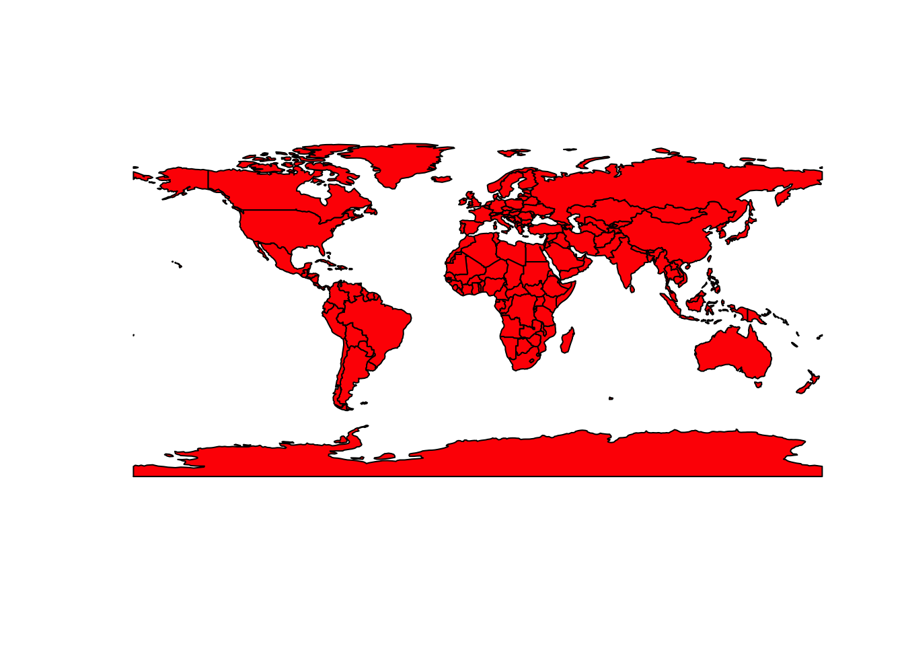
Для быстрого построения тематических карт по выбранному показателю необходимо при вызове функции plot() указать соответствующий атрибут фрейма данных:
plot(countries['sovereignt'], key.pos = NULL) # Здесь легенда не нужна
Для отображения координатной сетки надо указать параметр graticule = TRUE, а подписей координат — axes = TRUE:
plot(countries['gdp_md_est'], graticule = TRUE, axes = TRUE)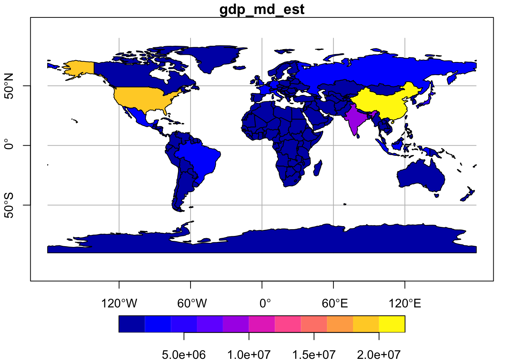
Для совмещения нескольких слоев на одной карте необходимо при втором и последующих вызовах функции plot() указать параметр add = TRUE. Все остальные настройки визуализации работают так же,как и в обычной графике:
cities_large = cities |>
filter(scalerank == 0,
! name %in% c('Washington, D.C.', 'Paris', 'Riyadh', 'Rome', 'São Paulo', 'Kolkata'))
plot(st_geometry(countries), lwd = 0.5, border = 'gray')
plot(oceans, col = 'steelblue1', border = 'steelblue', add = TRUE)
plot(lakes, col = 'steelblue1', border = 'steelblue', add = TRUE)
plot(rivers, col = 'steelblue', add = TRUE)
plot(cities_large, col = 'black', pch = 19, cex = 0.25, add = TRUE)
text(cities_large$longitude, cities_large$latitude,
label = cities_large$name, cex = 0.5, pos = 2, offset = 0.25)
Внимание: чтобы слои совместились на карте, они должна иметь одинаковую систему координат.
Ясно, что на полученных нами картах можно много что улучшить, однако это мы отложим до следующей главы, где подробно разбирается построение тематических карт в R.
Внимание: чтобы слои данных можно было совместно анализировать и наносить на одну карту, они должны иметь одну и ту же координатную систему (проекцию).
9.3.5.2 Интерактивные карты
R предоставляет возможности для интерактивного просмотра пространственных данных средствами библиотек веб-картографирования. В данном разделе мы кратко познакомимся с возможностями пакета mapview, который использует возможности библиотеки Leaflet. Функции данного пакета не предназначены для создания тематических карт высокого качества и рассчитаны на выполнение исследовательского анализа данных.
Чтобы отобразить векторный или растровый слой средствами mapview, достаточно вызвать одноименную функцию данного пакета:
mapview(countries)
Чтобы отобразить определенный показатель, можно использовать параметр zcol, а палитру передать в параметр col.regions:
nconts = length(unique(countries$continent))
mapview(countries, zcol = 'continent',
col.regions = RColorBrewer::brewer.pal(nconts, 'Set1'))
Чтобы скомбинировать несколько слоев, необходимо сложить несколько вызовов mapview():
{ mapview(countries, zcol = 'continent',
col.regions = RColorBrewer::brewer.pal(nconts, 'Set1')) +
mapview(cities_large, col.regions = 'black', label = 'name', cex = 3) } |>
leafem::addStaticLabels(cities_large, label = cities_large$name,
offset = c(0.1, 0),
style = list("color" = "black", "font-weight" = "bold"))
9.3.6 Атрибутивные операции
Поскольку пространственные объекты хранятся в фреймах данных, к ним можно применять стандартные операции выборки по атрибутам и преобразования таблиц. Например, можно выбрать Италию и отобразить ее на отдельной карте:
italy = countries |>
filter(sovereignt == 'Italy')
plot(st_geometry(italy))
Следующий пример иллюстрирует как выбрать страны с населением более 100 млн человек:
largest = countries |>
select(pop_est) |>
filter(pop_est > 100000000)
plot(outlines, col = 'lightgrey')
plot(largest, col = 'red', add = TRUE)
Обратите внимание на то, что при вызове функции select() столбец geometry не был указан в числе выбираемых переменных. Тем не менее, то, что мы смогли построить карту по результатам выборки, говорит о том, что данный столбец был сохранен. Функции dplyr определены для объектов sf таким образом, чтобы всегда сохранять геометрический столбец.
Еще интереснее работает агрегирование объектов по атрибутам. В случае, когда агрегируются пространственные объекты, необходимо объединять и их геометрию. При этом если у агрегируемых объектов имеется общая граница, ее необходимо удалить, а если объекты разнесены в пространстве, из них нужно собрать новый мульти-объект.
Например, мы можем агрегировать валовой региональный продукт по континентам:
continents = countries %>% # этот пайп из пакета magrittr для подстановки в точку
filter(., st_is_valid(.)) |>
group_by(continent) |>
summarise(gdp = sum(gdp_md_est))
plot(continents['gdp'])
Потрясающе просто, не правда ли? Вдобавок, мы еще и получили границы континентов (достаточно условные, конечно), которых у нас раньше не было. Данный пример также показывает, что атрибутивные операции над пространственными объектами всегда учитывают их геометрию.
9.3.7 Создание пространственных объектов
Пространственные объекты в R можно собирать “вручную”, если есть такая необходимость. Например, вам известны координаты границ участков полевого обследования, полученные посредством GPS, а вам необходимо превратить их в полигоны, чтобы выполнить анализ и картографирование. Придется из координат собрать полигоны программным путем. Процесс создания пространственных объектов осуществляется в последовательности их иерархического соподчинения: sfg > sfc > sf.
9.3.7.1 Геометрические объекты (sfg)
Для создания геометрических объектов в пакете sf существует ряд функций с говорящими названиями:
| Функция | Тип пространственного объекта |
|---|---|
st_point() |
POINT |
st_linestring() |
LINESTRING |
st_polygon() |
POLYGON |
st_multipoint() |
MULTIPOINT |
st_multilinestring() |
MULTILINESTRING |
st_multipolygon() |
MULTIPOLYGON |
st_geometrycollection() |
GEOMETRYCOLLECTION |
В зависимости от типа создаваемого объекта, данные функции принимают координаты, организованные в виде одной из трех структур данных:
- Вектор координат (POINT)
- Матрица координат (MULTIPOINT или LINESTRING), в которой строки соответствуют точкам, столбцы — координатам
- Список (для всех остальных типов)
Проще всего создаются отдельные точки (POINT):
st_point(c(0, 2)) # XY POINT
st_point(c(0, 2, -1)) # XYZ POINT
st_point(c(0, 2, 5), dim = 'XYM') # XYM POINT
st_point(c(0, 2, -1, 5)) # XYZM POINTДополнительный параметр dim= служит для уточнения типа геометрии точек и по сути нужен только тогда, когда необходимо создать редко используемые точки типа XYM. во всех остальных случаях (XY, XYZ, XYZM) размерность геометрии распознается по умолчанию.
При создании мультиточек (MULTIPOINT) и линий (LINESTRING) необходимо подавать на вход функции уже матрицу координат:
coords = matrix(c(
0, 2,
1, 3,
3, 1,
5, 0
), ncol = 2, byrow = TRUE)
mp = st_multipoint(coords) # XY MULTIPOINT
print(mp)
ls = st_linestring(coords) # XY LINESTRING
print(ls)В первом случае геометрия состоит из отдельных точек. Во втором случае те же самые точки соединены линией:
plot(ls)
plot(mp, col = 'red', pch = 19, add = TRUE)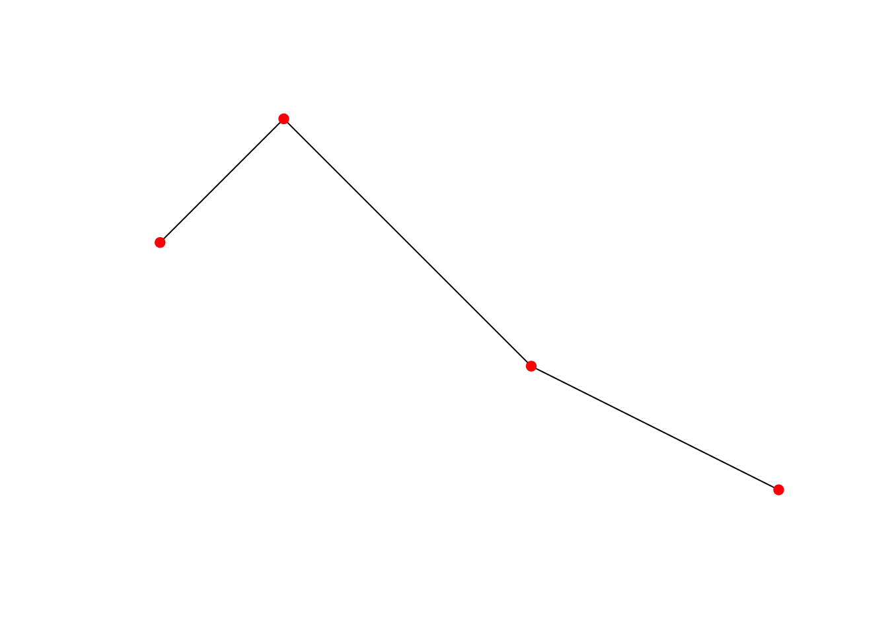
Создание трех-(XYZ, XYM) и четырехмерных (ZYXM) мультиточек и линий выполняется аналогично, но матрица должна содержать не 2, а, соответственно 3 или 4 столбца, и при необходимости параметр dim = 'XYM'.
Создание полигонов (POLYGON), мультиполигонов (MULTIPOLYGON) и мультилиний (MULTILINESTRING) требует уже создания списков из матриц.
Почему нельзя представить обычный (не мульти) полигон просто матрицей координат? Потому что полигон может содержать дырки. Например, контур леса может содержать дырку в том месте, где находится озеро. Или озеро может содержать дырку в том месте, где находится остров. Природа предлагает нам бесконечное число таких примеров. В целях универсализации приходится закладываться на возможность наличия дырок в полигонах, поэтому даже полигоны без дырок представляются в виде списков. При этом действу.т следующее правила:
- Первая матрица координат в списке отвечает за контур полигона
- Все остальные матрицы координат отвечают за дыры в полигоне
- Координаты первой и последней точки в каждой матрице должны совпадать
Если дыр в полигоне нет, его список будет содержать только одну матрицу. Рассмотрим оба примера построения полигонов:
coords = matrix(c( # Координаты главного полигона
1, 0,
0, 2,
2, 3,
4, 2,
3, 0.5,
1, 0
), ncol = 2, byrow = TRUE)
pol = st_polygon(list(coords)) # Простой полигон
print(pol)
plot(pol, col = 'lightblue')
hole = matrix(c( # Координаты дыры
2, 1,
3, 1.5,
3, 2,
2, 2,
1.5, 1.5,
2, 1
), ncol = 2, byrow = TRUE)
pol2 = st_polygon(list(coords, hole)) # Полигон с дырой
print(pol2)
plot(pol2, col = 'lightblue')
Мультиполигоны (MULTIPOLYGON) и мультилинии (MULTILINESTRING) требуются тогда, когда один и тот же географический объект состоит из нескольких геометрических объектов. Простейший пример — островные государства. Чтобы представить страну, занимающую архипелаг (Багамские острова, Индонезия, Япония и т.д.) как один пространственный объект, необходимо создать мультиполигон. Все компоненты мультиполигона будут иметь общий набор атрибутов (непространственных характеристик). Мультилинии используются реже мультиполигонов и необходимы для представления линейных объектов, разорванных в пространстве. Примером такого объекта может быть любая река или канал, которые разорваны в тех местах, где они протекают через озеро или водохранилище, представленное полигональным объектом.
В мультиполигонах добавляется еще один уровень списка, то есть искомые матрицы координат будут располагаться как минимум на втором уровне вложенности:
coords1 = matrix(c(
0.5, 0,
0, 1,
1, 1.5,
2, 1,
1.5, 0.25,
0.5, 0
), ncol = 2, byrow = TRUE)
coords2 = matrix(c(
3, 1,
2.5, 2,
3.5, 2.5,
4, 2,
4, 1.25,
3, 1
), ncol = 2, byrow = TRUE)
mpol = st_multipolygon(list(list(coords1), list(coords2)))
print(mpol)
plot(pol, col = 'grey') # Обычный полигон (серый)
plot(mpol, col = 'pink', add = TRUE) # Мультиполигон (розовый)
Как насчет острова на озере? Если остров и суша, окружающая озеро, составляют единое целое (например, подлежат учету как единый массив леса), их можно собрать как мультиполигон. В этом случае первая компонента мультиполигона будет представлять собой полигон с дыркой, а вторая компонента — остров. Порядок компонент в данном случае роли не играет:
coords4 = matrix(c(
2.2, 1.2,
2.8, 1.5,
2.8, 1.8,
2.2, 1.8,
2.0, 1.6,
2.2, 1.2
), ncol = 2, byrow = TRUE)
island = st_polygon(list(coords4))
mpol2 = st_multipolygon(list(pol2, island))
print(mpol2)
plot(mpol2, col = 'darkolivegreen4')
Из данного примера также видно, что при сборе мультиполигона на самом нижнем уровне вложенности можно подавать не списки матриц координат, а готовые полигоны.
Мультилиния, в отличие от мультиполигона, не требует дополнительного списка верхнего уровня, поскольку линии не могут содержать дыр. Например, можно собрать мультилинию из двух частей, соответствующих участкам реки до и после озера:
coords1 = matrix(c(
-3, 0,
-1, 2,
0, 2
), ncol = 2, byrow = TRUE)
coords2 = matrix(c(
4, 2,
5, 3,
6, 5
), ncol = 2, byrow = TRUE)
mline = st_multilinestring(list(coords1, coords2))
print(mline)
plot(mline, lwd = 3, col = 'blue')
plot(pol2, col = 'lightblue', add = TRUE)
Наконец, еще один вид геометрии — это геометрическая коллекция (GEOMETRYCOLLECTION), который позволяет хранить вместе любые виды геометрий. Эта возможность используется достаточно редко, тем не менее, рассмотреть ее нужно. Геометрическая коллекция собирается из списка объектов с простыми типами геометрии (мы создали их ранее):
col = st_geometrycollection(list(ls, mp, mline, pol2))
print(col)
plot(col)
9.3.7.2 Списки геометрических объектов (sfc)
Списки геометрических объектов (класс sfc) используются в таблицах пространственных объектов в качестве столбца, который хранит геометрию объектов. Создание таких списков осуществляется функцией st_sfc(), которой достаточно передать в качестве перечня параметров объекты типа sfg. Рассмотрим создание списка геометрий на примере точечных объектов (для остальных типов объектов порядок действий не меняется):
moscow.sfg = st_point(c(37.615, 55.752))
irkutsk.sfg = st_point(c(104.296, 52.298))
petro.sfg = st_point(c(158.651, 53.044))
cities.sfc = st_sfc(moscow.sfg, irkutsk.sfg, petro.sfg)
print(cities.sfc)
## Geometry set for 3 features
## Geometry type: POINT
## Dimension: XY
## Bounding box: xmin: 37.615 ymin: 52.298 xmax: 158.651 ymax: 55.752
## CRS: NAПри создании списка геометрий для него может быть определена система координат (это можно сделать и позднее при создании таблицы пространственных объектов). Для этого используем уже знакомую нам функцию st_crs():
st_crs(cities.sfc) = st_crs(4326) # WGS84
print(cities.sfc)
## Geometry set for 3 features
## Geometry type: POINT
## Dimension: XY
## Bounding box: xmin: 37.615 ymin: 52.298 xmax: 158.651 ymax: 55.752
## Geodetic CRS: WGS 84Для списка геометрий может быть определена только одна система координат
Можно посмотреть, куда легли наши точки:
plot(cities.sfc, pch = 19)
countries |>
filter(sovereignt == 'Russia') |>
st_geometry() |>
plot(add = TRUE)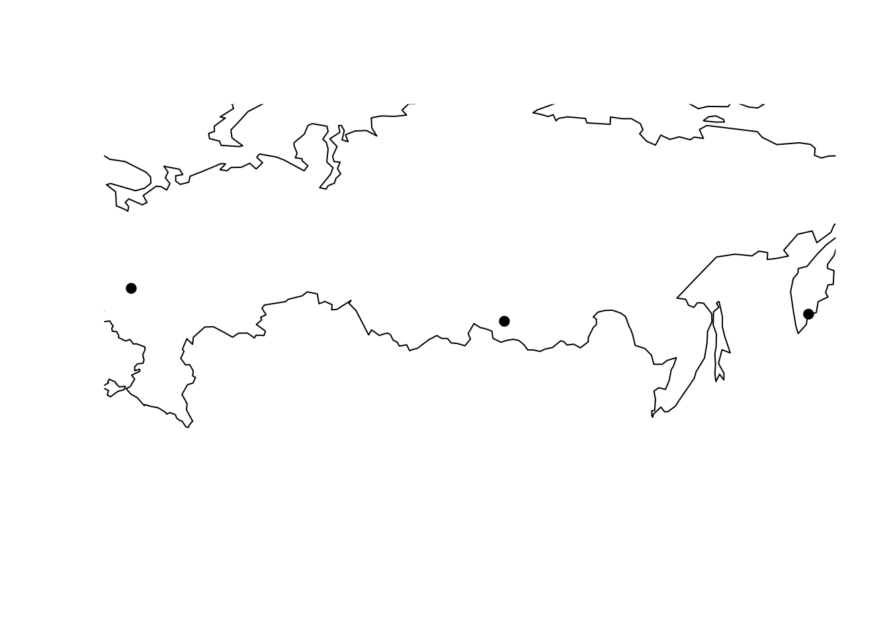
9.3.7.3 Пространственные объекты (sf)
Пространственные объекты (класс sf) организуются в виде фрейма данных, один из столбцов которого имеет класс sfc. Для этого следует сначала создать обычный фрейм данных с атрибутами, а затем соединить его со списком геометрий посредством функции st_sf:
city.attr = data.frame(
name = c('Москва', 'Иркутск', 'Петропавловск-Камчатский'),
established = c(1147, 1661, 1740),
population = c(12500, 620, 180)
)
cites.sf = st_sf(city.attr, geometry = cities.sfc)
print(cites.sf)
## Simple feature collection with 3 features and 3 fields
## Geometry type: POINT
## Dimension: XY
## Bounding box: xmin: 37.615 ymin: 52.298 xmax: 158.651 ymax: 55.752
## Geodetic CRS: WGS 84
## name established population geometry
## 1 Москва 1147 12500 POINT (37.615 55.752)
## 2 Иркутск 1661 620 POINT (104.296 52.298)
## 3 Петропавловск-Камчатский 1740 180 POINT (158.651 53.044)9.3.7.4 Точки по координатам
Достаточно распространенной является следующая задача: имеются координаты точек в табличной форме, необходимо создать на их основе набор пространственных объектов. Для решения этой задачи можно воспользоваться функцией st_as_sf(). Рассмотрим задачу на примере файла координат станций из базы метеорологических данных ВНИИГМИ-МЦД:
(stations = read_fwf('data/vniigmi/stations.txt',
col_positions = fwf_widths(diff(c(1, 7, 42, 47, 53, 59, 67, 71)),
col_names = c('id', 'name', 'lat', 't1', 'lon', 't2', 'z')),
locale = locale(encoding = 'CP1251')))
## # A tibble: 1,124 × 7
## id name lat t1 lon t2 z
## <dbl> <chr> <dbl> <chr> <dbl> <chr> <dbl>
## 1 20046 Им.Э.Т.Кренкеля,ГМО 80.6 с.ш. 58 в.д. 21
## 2 20069 Остров_Визе 79.5 с.ш. 77.0 в.д. 10
## 3 20087 Голомянный 79.6 с.ш. 90.6 в.д. 7
## 4 20107 Баренцбург 78.1 с.ш. 14.2 в.д. 73
## 5 20289 Русский 77.2 с.ш. 96.4 в.д. 9
## 6 20292 Им.Е.К.Федорова,ГМО 77.7 с.ш. 104. в.д. 12
## 7 20353 мыс_Желания 77.0 с.ш. 68.6 в.д. 9
## 8 20476 Стерлегова 75.4 с.ш. 88.9 в.д. 10
## 9 20667 Им.М.В.Попова 73.3 с.ш. 70.0 в.д. 4
## 10 20674 Остров_Диксон 73.5 с.ш. 80.4 в.д. 42
## # ℹ 1,114 more rowsТеперь создадим пространственные точки на основе этой таблицы, взяв координаты из столбцов lat и lon соответственно и указав код системы координат:
sf_stations = st_as_sf(stations, coords = c("lon", "lat"), crs = 4326)
plot(st_geometry(sf_stations), pch = 19, col = 'red', cex = 0.25)
plot(st_geometry(countries), border = 'grey', add = TRUE)
box()
9.3.7.5 Преобразование типов геометрии
Для преобразования типов геометрии существует функция st_cast(). Функция принимает объекты классов sfg, sfc или sf, а также название типа геометрии, к которому необходимо привести входные объекты. Довольно часто возникает задача конвертации площадного объекта в линейный и обратно, а также задача получения координат вершин линейного или площадного объекта в виде точек. Примеры преобразований:
italy.borders = st_cast(italy, 'MULTILINESTRING')
class(st_geometry(italy.borders))
## [1] "sfc_MULTILINESTRING" "sfc"
italy.regions = st_cast(italy.borders, 'MULTIPOLYGON')
class(st_geometry(italy.regions))
## [1] "sfc_MULTIPOLYGON" "sfc"
italy.points = st_cast(italy.borders, 'POINT')
class(st_geometry(italy.points))
## [1] "sfc_POINT" "sfc"
plot(st_geometry(italy.regions), lwd = 0.5)
plot(italy.points, pch = 20, add = TRUE)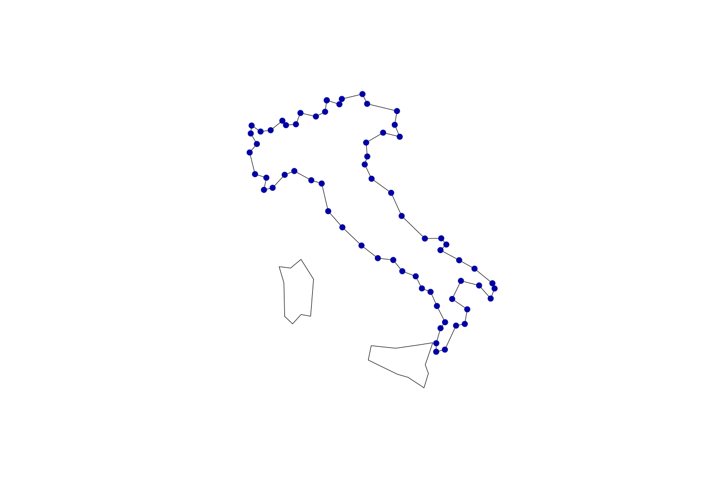
9.3.7.6 Полигонизация и разбиение линий
Полигонизация — это процесс преобразования линии или мультилинии в полигон(ы). Полигон может быть образован последовательностью из одной и более линий, для которых выполняются следующие условия:
- Каждая линия является простой (не имеет самопересечений)
- Линии касаются только своими начальными и конечными точками
- Линии образуют замкнутую последовательность (т.е. выйдя из любой конечной точки и двигаясь вдоль множества линий, можно вернуться в ту же точку.)
Полигонизация может применяться только к одному геометрическому объекту (simple feature geometry). Соответственно, это должна быть либо просто замкнутая линия, либо мультилиния, компоненты которой образуют замкнутую последовательность.
Рассмотрим операции полигонизации и добавления узлов на простом примере трех пересекающихся отрезков:
# Создадим три линии
coords1 = rbind(c(0, 0), c(0, 6))
line1 = st_linestring(coords1)
coords2 = rbind(c(-1,1), c(5,1))
line2 = st_linestring(coords2)
coords3 = rbind(c(-1,5), c(4,0))
line3 = st_linestring(coords3)
# Создадим мультилинию
mls = st_multilinestring(list(line1, line2, line3))
plot(mls)
# Посмотрим на ее точки
points = st_cast(mls, 'MULTIPOINT')
plot(points, pch = 20, add = TRUE)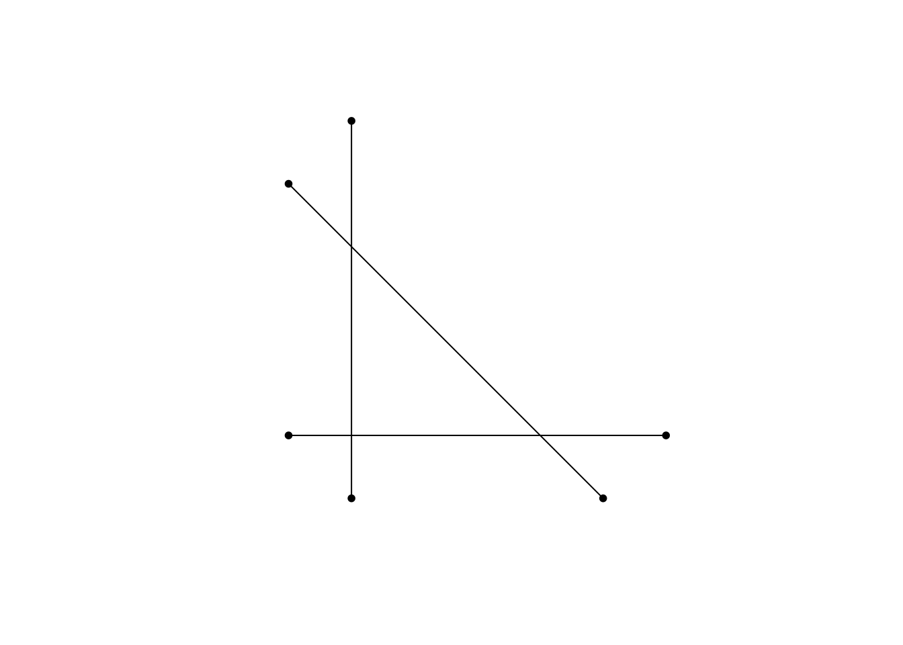
Из рисунка видно, что линии образуют треугольную замкнутую область. Также рисунок показывает, что у компонент мультилинии нет вершин в точках пересечения. Мы можем попытаться найти замкнутые области и превратить их в полигоны, используя st_polygonize():
st_polygonize(mls)Операция завершилась возвратом пустой геометрической коллекции, то есть программа не смогла выделить замкнутые области. Это произошло по причине того, что линии не разбиты в точках пересечения. Разбить их на компоненты можно, используя функцию st_node():
mls2 = st_node(mls)
poly2 = st_polygonize(mls2)
points2 = st_cast(mls2, 'MULTIPOINT')
plot(mls2)
plot(poly2, col = 'grey', add = TRUE)
plot(points2, pch = 20, add = TRUE)
Таким образом, после разбиения линий на куски в точках пересечения стала возможной операция полигонизации.
9.3.8 Геометрические атрибуты
К описательным характеристикам геометрии относятся ограничивающий прямоугольник, периметр (для линий и полигонов), площадь (для полигонов), центроид и список координат, которые можно получить с помощью функций st_bbox(), st_length(), st_area(), st_centroid() и st_coordinates() соответственно. Функции корректно работают для простых объектов, мультиобъектов, списков геометрий и пространственных объектов. Применительно к полигону Италии эти параметры будут учитывать части геометрии, занимаемые островами:
st_bbox(italy) # Координаты органичивающего прямоугольника
## xmin ymin xmax ymax
## 6.749955 36.619987 18.480247 47.115393
st_area(italy) # Площадь
## 314577521836 [m^2]
st_length(italy) # Периметр
## 0 [m]
st_centroid(italy) |> st_geometry() # Центроид (может быть не внутри для невыпуклых фигур)
## Geometry set for 1 feature
## Geometry type: POINT
## Dimension: XY
## Bounding box: xmin: 12.2687 ymin: 42.67074 xmax: 12.2687 ymax: 42.67074
## Geodetic CRS: WGS 84
st_point_on_surface(italy) |> st_geometry() # Точка гарантированно внутри, но не обязательно в центре
## Geometry set for 1 feature
## Geometry type: POINT
## Dimension: XY
## Bounding box: xmin: 12.63118 ymin: 42.55822 xmax: 12.63118 ymax: 42.55822
## Geodetic CRS: WGS 84
st_coordinates(italy) |> head() # Список координат
## X Y L1 L2 L3
## [1,] 10.44270 46.89355 1 1 1
## [2,] 11.04856 46.75136 1 1 1
## [3,] 11.16483 46.94158 1 1 1
## [4,] 12.15309 47.11539 1 1 1
## [5,] 12.37649 46.76756 1 1 1
## [6,] 13.80648 46.50931 1 1 1Обратите внимание на то, что площадь и периметр выводятся с указанием единиц измерений! Это возможно благодаря тому, что объекты типа sf поддерживают единицы измерений на основе пакета units.
Если данные находятся в плоской прямоугольной системе координат, то единицы измерения как правило указываются в параметрах проекции — следовательно, они могут быть использованы при вычислении геометрических параметров объектов. Если же данные хранятся в широтах и долготах, то вычисление геометрических параметров осуществляется пакетом sf по формулам сферической тригонометрии через пакет geosphere. Это позволяет выводить результат в плоских единицах измерения.
Ограничивающий прямоугольник можно быстро преобразовать в полигон и нанести на карту, применив функцию st_as_sfc():
box = st_as_sfc(st_bbox(italy)) # Ограничивающий прямоугольник
plot(italy |> st_geometry(),
col = 'lightgrey')
plot(box,
border = 'orangered',
add = TRUE)
plot(st_centroid(italy),
col = 'darkgreen',
pch = 19,
add = TRUE)
plot(st_point_on_surface(italy),
col = 'steelblue4',
pch = 19,
add = TRUE)
Как видно, в данном случае центроид и характерная точка расположились относительно рядом. Однако так бывает далеко не всегда. Выполним аналогичные вычисления для Индонезии:
indonesia = countries |> filter(sovereignt == 'Indonesia')
box = st_as_sfc(st_bbox(indonesia))
plot(indonesia |> st_geometry(),
col = 'lightgrey')
plot(box,
border = 'red',
add = TRUE)
plot(st_centroid(indonesia),
col = 'darkgreen',
pch = 19,
add = TRUE)
plot(st_point_on_surface(indonesia),
col = 'steelblue4',
pch = 19,
add = TRUE)
Как видно, в данном случае центроид мультиполигона оказался за пределами какой-либо из его полигональных компонент, в то время как характерная точка находится внутри одного из полигонов. Таким образом, если необходимо получить точку, находящуюся гарантированно в пределах исходного множества, следует использовать st_point_on_surface(). При этом следует помнить, что характерная точка, в отличие от центроида, может не располагаться в визуальном центре тяжести множества объектов, и выбор между этими способами описания геометрии остается за разработчиком.
9.3.9 Экспорт
Для экспорта векторных пространственных данных можно воспользоваться функцией st_write(), которая определит формат выходного файла по указанному вами расширению:
st_write(cites.sf, 'data/mycities.shp') # Шейп-файл9.4 Растровые данные
Работа с растровыми данными в целом гораздо проще, чем работа с векторными объектами. Это обусловлено в том числе жесткой сеточной структурой данных, которая предоставляет не так много свободы в различных сценариях обработки данных. В то же время, эта структура позволяет сделать растровые алгоритмы универсальными и робастными, многие задачи решаются в растровом виде быстрее и проще, чем в векторном.
9.4.1 Теоретические сведения
Растр представляет из себя матрицу значений. Каждой ячейке матрицы соответствует прямоугольная пространственная область фиксированного размера, которая называется пикселом. Различают растры непрерывные и категориальные (классифицированные). Также необходимо разделять одноканальные и многоканальные растры. Примером одноканального растра является цифровая модель рельефа. В виде многоканальных растров часто представляют космические снимки.
В отличие от векторных данных, которые требуют указания координат для каждой вершины, регулярно-ячеистый характер растровой модели позволяет вычислять координаты пикселов на основе их индексов. Поэтому фактически растровые данные хранятся в виде линейно упорядоченного списка значений (raster values) и описания геометрии растра (raster geometry).
Геометрия растра определяет, где именно располагаются в пространстве пикселы растра и может быть описана путем указания следующих компонент3:
| Параметр | Назначение |
|---|---|
NCOLS |
Количество столбцов |
NROWS |
Количество строк |
XLLCENTER |
Координата \(X\) центра левой нижней ячейки растра |
YLLCENTER |
Координата \(Y\) центра левой нижней ячейки растра |
CELLSIZE |
Размер ячейки |
Иногда вместо параметров XLLCENTER/YLLCENTER указываются XLLCORNER/YLLCORNER, которые кодируют координаты левого нижнего угла, а не центра левой нижней ячейки растра. Выбор одного из двух этих вариантов определяет тип регистрации растра, а их значения указывают, в какое именно место необходимо “посадить” растр, чтобы его ячейки заняли соответствующие им области в системе координат. Если геометрия растра характеризуется анизотропией, то вместо одного значения CELLSIZE могут быть указаны разные размеры ячеек по осям координат CELLSIZEX и CELLSIZEY.
В отличие от векторной модели, которая позволяет хранить данные только о нужных географических локациях, растровая модель такой свободы не предоставляет. Матрица ячеек растра всегда покрывает область данных целиком, и за простоту растровой структуры приходится расплачиваться ее неэкономичностью. Поскольку часто данные имеются не на всю территорию, возникает необходимость кодирования ячеек, для которых данные не известны, специальным числом (назовем его условно NODATA_VALUE). Значение этого числа хранится в метаданных растра и позволяет интерпретировать соответствующие ячейки как пустые.
В настоящее время для работы с растровыми данными в R используются два пакета: stars и terra. terra является наследником пакета raster, который исторически был основным средством работы с растровыми данными и обладает широким спектром функций растрового анализа. stars — относительно новый, разработан с целью поддержки многомерных данных и более тесного взаимодействия с пакетом sf. В целом можно сказать, что пакеты terra и stars частично пересекаются по функциональности, но скорее дополняют друг друга, нежели дублируют.
В этой и ближайших лекциях мы будем работать с растрами в формате stars, поскольку он концептуально близок к пакету sf.
9.4.2 Чтение
Для чтения растров любой размерности можно использовать функцию read_stars():
dem = read_stars('data/world/gebco.tif') # Цифровая модель рельефа
dem
## stars object with 2 dimensions and 1 attribute
## attribute(s):
## Min. 1st Qu. Median Mean 3rd Qu. Max.
## gebco.tif -10348 -4287 -2458 -1890.525 215 6581
## dimension(s):
## from to offset delta refsys point x/y
## x 1 900 -180 0.4 WGS 84 FALSE [x]
## y 1 450 90 -0.4 WGS 84 FALSE [y]
img = read_stars('data/world/BlueMarbleJuly.tif') # Цветной космический снимок (RGB)
img
## stars object with 3 dimensions and 1 attribute
## attribute(s):
## Min. 1st Qu. Median Mean 3rd Qu. Max.
## BlueMarbleJuly.tif 1 13 33 63.13569 75 255
## dimension(s):
## from to offset delta refsys point x/y
## x 1 720 -180 0.5 WGS 84 FALSE [x]
## y 1 360 90 -0.5 WGS 84 FALSE [y]
## band 1 3 NA NA NA NA9.4.3 Внутренняя структура
Для работы с данными типа stars необходимо понимать их внутреннюю структуру. Для начала можно взглянуть на нее посредством стандартной функции str():
str(img)
## List of 1
## $ BlueMarbleJuly.tif: num [1:720, 1:360, 1:3] 6 4 7 7 7 7 7 8 8 8 ...
## - attr(*, "dimensions")=List of 3
## ..$ x :List of 7
## .. ..$ from : num 1
## .. ..$ to : num 720
## .. ..$ offset: num -180
## .. ..$ delta : num 0.5
## .. ..$ refsys:List of 2
## .. .. ..$ input: chr "WGS 84"
## .. .. ..$ wkt : chr "GEOGCRS[\"WGS 84\",\n ENSEMBLE[\"World Geodetic System 1984 ensemble\",\n MEMBER[\"World Geodetic Sys"| __truncated__
## .. .. ..- attr(*, "class")= chr "crs"
## .. ..$ point : logi FALSE
## .. ..$ values: NULL
## .. ..- attr(*, "class")= chr "dimension"
## ..$ y :List of 7
## .. ..$ from : num 1
## .. ..$ to : num 360
## .. ..$ offset: num 90
## .. ..$ delta : num -0.5
## .. ..$ refsys:List of 2
## .. .. ..$ input: chr "WGS 84"
## .. .. ..$ wkt : chr "GEOGCRS[\"WGS 84\",\n ENSEMBLE[\"World Geodetic System 1984 ensemble\",\n MEMBER[\"World Geodetic Sys"| __truncated__
## .. .. ..- attr(*, "class")= chr "crs"
## .. ..$ point : logi FALSE
## .. ..$ values: NULL
## .. ..- attr(*, "class")= chr "dimension"
## ..$ band:List of 7
## .. ..$ from : num 1
## .. ..$ to : int 3
## .. ..$ offset: num NA
## .. ..$ delta : num NA
## .. ..$ refsys: chr NA
## .. ..$ point : logi NA
## .. ..$ values: NULL
## .. ..- attr(*, "class")= chr "dimension"
## ..- attr(*, "raster")=List of 4
## .. ..$ affine : num [1:2] 0 0
## .. ..$ dimensions : chr [1:2] "x" "y"
## .. ..$ curvilinear: logi FALSE
## .. ..$ blocksizes : int [1:3, 1:2] 720 720 720 1 1 1
## .. .. ..- attr(*, "dimnames")=List of 2
## .. .. .. ..$ : NULL
## .. .. .. ..$ : chr [1:2] "x" "y"
## .. ..- attr(*, "class")= chr "stars_raster"
## ..- attr(*, "class")= chr "dimensions"
## - attr(*, "class")= chr "stars"Видно, что данный трёхканальный растр представляет собой список из единственного элемента с названием BlueMarbleJuly.tif — это имя было присвоено автоматически при чтении растра. Каждый такой элемент соответствует переменной данных. В данном случае переменная одна — это интенсивность цвета. Хранится она в виде трехмерного массива (array) размерностью \(720 \times 360 \times 3\):
str(img[[1]])
## num [1:720, 1:360, 1:3] 6 4 7 7 7 7 7 8 8 8 ...
img[[1]][100, 200, 2]
## [1] 14Каждой оси этого массива соответствует измерение (dimension), которое определяет параметры отображения индексов массива на соответствующую систему координат (пространственную, временную, спектральную и т.д.). Например, чтобы понять, что ячейка растра с индексами [36, 18, ] имеет географические координаты (широту и долготу) (0, 0), нужно знать направления осей растра, размер ячейки и координаты одной из угловых ячеек растра. Необходимая информация находится в атрибуте dimensions объекта stars, т.е. является общей для всех переменных. При печати параметры измерений выводятся в удобном табличном виде:
attr(img, 'dimensions')
## from to offset delta refsys point x/y
## x 1 720 -180 0.5 WGS 84 FALSE [x]
## y 1 360 90 -0.5 WGS 84 FALSE [y]
## band 1 3 NA NA NA NAЭтот атрибут представляет собой список, длина которого равна количеству измерений в массиве данных переменной. Обычно измерения имеют имена, в данном случае это x, y и band. Описание каждого измерения выполнено по единому шаблону, который включает следующие параметры:
from: начальный индекс (будет меняться при обрезке растра при постоянной точке отсчета индексов);to: конечный индекс (будет меняться при обрезке растра при постоянной точке отсчета индексов);offset: координата первого пиксела (точки отсчета);delta: размер ячейки;refsys: координатная (референцная) система: для систем счета координат, времени, высот и других измерений будет своя;point: логическое значение, которое указывает, следует ли интерпретировать элементы растра по этой оси как измеренные в точке (мгновенные) или агрегированные по площади (за временной период);values: значения координат ячеек по данной осиNULL(используется в большинстве случаев, т.к. координаты могут быть вычислены на основеfrom,deltaи индекса пиксела),- вектор координат (используется для представления ректилинейных растров в переменным размром пиксела),
- объект класса
intervals(список из двух векторов — начал и концов интервалов), or - матрица координат такой же размерности, что и пространственные измерения растра. В случае стекущего примера будет иметь размер \(720 \times 360\). Используется для представления криволинейных растров.
Например, посмотрим параметры измерения x растра:
attr(img, 'dimensions')[['x']]
## $from
## [1] 1
##
## $to
## [1] 720
##
## $offset
## [1] -180
##
## $delta
## [1] 0.5
##
## $refsys
## Coordinate Reference System:
## User input: WGS 84
## wkt:
## GEOGCRS["WGS 84",
## ENSEMBLE["World Geodetic System 1984 ensemble",
## MEMBER["World Geodetic System 1984 (Transit)"],
## MEMBER["World Geodetic System 1984 (G730)"],
## MEMBER["World Geodetic System 1984 (G873)"],
## MEMBER["World Geodetic System 1984 (G1150)"],
## MEMBER["World Geodetic System 1984 (G1674)"],
## MEMBER["World Geodetic System 1984 (G1762)"],
## MEMBER["World Geodetic System 1984 (G2139)"],
## ELLIPSOID["WGS 84",6378137,298.257223563,
## LENGTHUNIT["metre",1]],
## ENSEMBLEACCURACY[2.0]],
## PRIMEM["Greenwich",0,
## ANGLEUNIT["degree",0.0174532925199433]],
## CS[ellipsoidal,2],
## AXIS["geodetic latitude (Lat)",north,
## ORDER[1],
## ANGLEUNIT["degree",0.0174532925199433]],
## AXIS["geodetic longitude (Lon)",east,
## ORDER[2],
## ANGLEUNIT["degree",0.0174532925199433]],
## USAGE[
## SCOPE["Horizontal component of 3D system."],
## AREA["World."],
## BBOX[-90,-180,90,180]],
## ID["EPSG",4326]]
##
## $point
## [1] FALSE
##
## $values
## NULL
##
## attr(,"class")
## [1] "dimension"Наконец, дополнительно к этому атрибут dimensions имеет свой собственный атрибут raster, который необходим для того чтобы определить какие именно измерения растра являются пространственными, а также установить преобразования, которые будут над ними производиться при анализе или визулизации:
img |> attr('dimensions') |> attr('raster') |> str()
## List of 4
## $ affine : num [1:2] 0 0
## $ dimensions : chr [1:2] "x" "y"
## $ curvilinear: logi FALSE
## $ blocksizes : int [1:3, 1:2] 720 720 720 1 1 1
## ..- attr(*, "dimnames")=List of 2
## .. ..$ : NULL
## .. ..$ : chr [1:2] "x" "y"
## - attr(*, "class")= chr "stars_raster"Видно, что атрибут raster содержит 3 элемента:
dimensions: названия измерений, которые являются пространственнымиaffine: параметры аффинного преобразования, которое будет применяться к пространственным измерениям перед их отображением или применением в операциях пространственного анализаcurvilinear: логическое значение, которое устанавливает, является ли растр криволинейным (в этом случае в параметреvaluesпространственных измерений должна быть матрица координат)
9.4.4 Визуализация
9.4.4.1 Статичные карты
Для визуализации одноканальных растров используется функция plot(). В простейшем виде ей достаточно просто передать визуализируемый растр:
par(mfrow = c(1,1))
plot(dem)
Поскольку растры часто используют в классифицированном виде, вы можете сформировать вектор граничных значений классов, вектор цветов классов, и передать их в параметры breaks и col функции plot() соответственно. Если параметр breaks не определять, то весь диапазон значений растра будет разбит на равные интервалы соответственно количеству цветов. Если не определять параметр col, то будет применена стандартная палитра terrain.colors. Вы также можете использовать одну из готовых палитр цветов или создать ее вручную (см. посвященную графической подсистеме R):
brks = c(-12000, -5000, -2500, -1000, -200, 0, 200, 500, 1000, 2000, 4000, 8000)
clrs = c(
"steelblue4",
"steelblue3",
"steelblue2",
"steelblue1",
"lightskyblue1",
"darkseagreen",
"lightgoldenrod1",
"darkgoldenrod1",
"darkorange",
"coral2",
"firebrick3")
plot(dem, breaks = brks, col = clrs)
plot(dem, col = colorRampPalette(c("black", "white"))(255))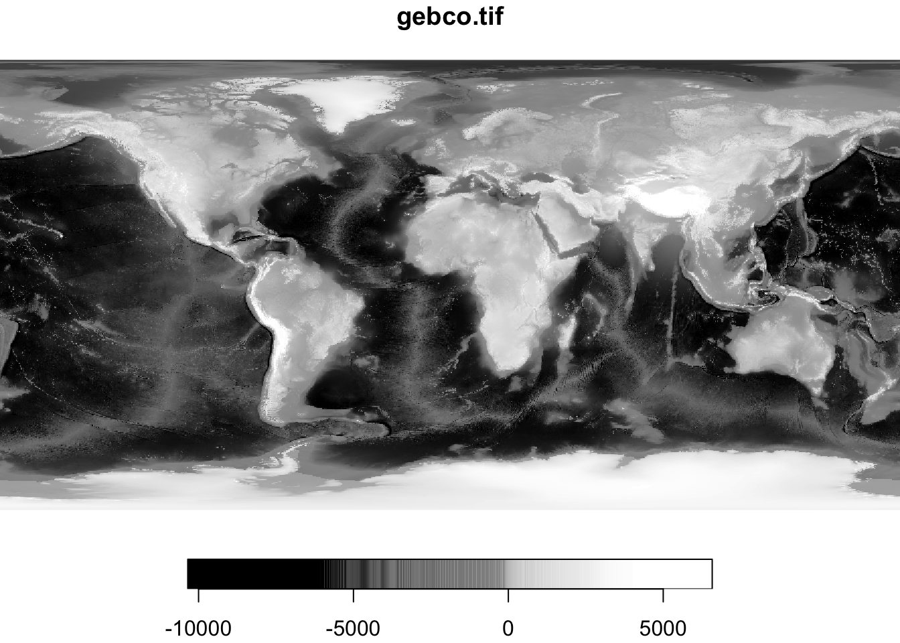
plot(dem, col = rainbow(10))
Для синтезирования цветного изображения на основе многоканального растра необходимо объект stars предварительно подать в функцию st_rgb():
plot(st_rgb(img))
Поскольку при визуализации космических снимков часто используют различные варианты синтеза каналов (чтобы лучше дешифрировать те или иные категории объектов), функция st_rgb() предоставляет такую возможность. Достаточно перечислить последовательность каналов растрового стека (по умолчанию эти каналы будут подставлены в каналы R, G и B соответственно):
st_rgb(img[,,,c(1, 2, 3)]) |> plot()
st_rgb(img[,,,c(1, 3, 2)]) |> plot()
st_rgb(img[,,,c(2, 1, 3)]) |> plot()
st_rgb(img[,,,c(2, 3, 1)]) |> plot()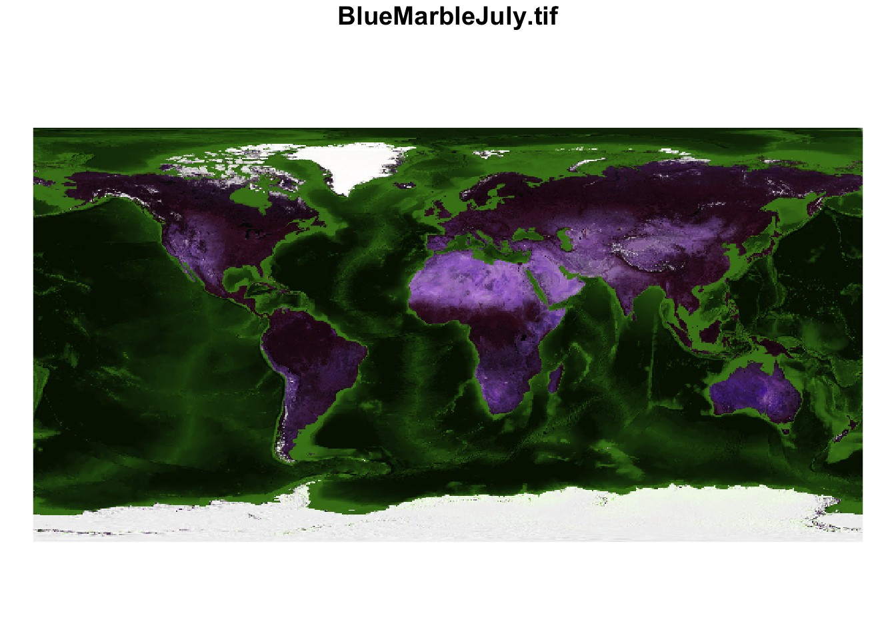
st_rgb(img[,,,c(3, 1, 2)]) |> plot()
st_rgb(img[,,,c(3, 2, 1)]) |> plot()
Вы можете совмещать на картах несколько растровых и векторных слоев точно так же как и при совмещении векторных данных (указав параметр add = TRUE при вызове функции plot()):
plot(st_rgb(img), reset = FALSE)
plot(outlines, border = rgb(1,1,1,0.5), lwd = 0.5, add = TRUE)
9.4.4.2 Интерактивные карты
Объекты типа stars могут быть визуализированы аналогично векторным на интерактивных картах mapview:
mapview(dem, at = brks, col = clrs)
9.4.5 Обрезка
Одна из распространенных задач при работе с растрами — это обрезка, то есть удаление растровых данных, находящихся за пределами указанной территории. Чаще всего обрезку делают либо ограничивающим прямоугольником, либо полигональным объектом. Рассмотрим оба варианта:
# Обрезка по ограничивающему прямоугольнику
box = st_bbox(c(xmin = -80, xmax = -10, ymax = 85, ymin = 58), crs = st_crs(4326))
dem_greenland = dem[box]
dem_greenland
## stars object with 2 dimensions and 1 attribute
## attribute(s):
## Min. 1st Qu. Median Mean 3rd Qu. Max.
## gebco.tif -4041 -811 -49 70.50328 1187.25 3228
## dimension(s):
## from to offset delta refsys point x/y
## x 251 425 -180 0.4 WGS 84 FALSE [x]
## y 13 80 90 -0.4 WGS 84 FALSE [y]
plot(dem_greenland)
Аналогичным образом можено обрезать растр контуром выбранной страны:
country = countries |>
filter(name == 'Afghanistan')
dem_country = dem[country]
dem_country
## stars object with 2 dimensions and 1 attribute
## attribute(s):
## Min. 1st Qu. Median Mean 3rd Qu. Max. NA's
## gebco.tif 261 877.5 1628 1824.854 2635 5036 485
## dimension(s):
## from to offset delta refsys point x/y
## x 602 638 -180 0.4 WGS 84 FALSE [x]
## y 129 152 90 -0.4 WGS 84 FALSE [y]
plot(dem_country)
9.4.6 Индексирование
Ортогональная структура объектов типа stars позволяет выполнять по ним различные срезы, отсекая ненужные данные. Для этого используется привычный по работе с векторами оператор квадратной скобки [, который работает следующим образом:
- первый аргумент выбирает атрибут
- второй и последующий аргументы выбирают измерения.
Таким образом, при работе с растрами, которые содержат один атрибут, вам необходимо указать 4 индекса: [var, x, y, band], где var - это название или порядковый номер атрибута, а x, y, band — порядковые номера двух координатных и одного семантического измерения.
Например:
# выбрать 1 канал
ch1 = img[,,,1]
ch1
## stars object with 3 dimensions and 1 attribute
## attribute(s):
## Min. 1st Qu. Median Mean 3rd Qu. Max.
## BlueMarbleJuly.tif 1 5 14 51.1141 47 255
## dimension(s):
## from to offset delta refsys point x/y
## x 1 720 -180 0.5 WGS 84 FALSE [x]
## y 1 360 90 -0.5 WGS 84 FALSE [y]
## band 1 1 NA NA NA NA
plot(ch1)
# выбрать диапазон ячеек растра
frag = img[, 320:470, 100:255, ]
frag
## stars object with 3 dimensions and 1 attribute
## attribute(s):
## Min. 1st Qu. Median Mean 3rd Qu. Max.
## BlueMarbleJuly.tif 1 20 50 65.96065 106 221
## dimension(s):
## from to offset delta refsys point x/y
## x 320 470 -180 0.5 WGS 84 FALSE [x]
## y 100 255 90 -0.5 WGS 84 FALSE [y]
## band 1 3 NA NA NA NA
plot(st_rgb(frag))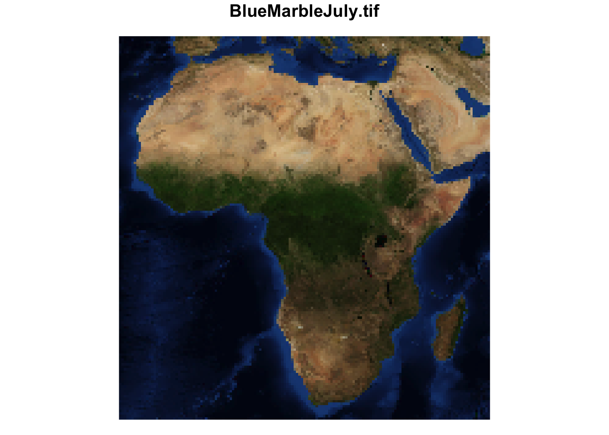
9.4.7 Манипуляции
Объекты типа stars поддерживают манипуляции, аналогичные тем, что могут применяться к векторным данным. Посмотрим это на примере данных по высоте земной поверхности с учетом и без покровного оледенения:
etopo = read_stars(c('data/etopo1_bed.tif', 'data/etopo1_ice.tif'))
etopo
## stars object with 2 dimensions and 2 attributes
## attribute(s):
## Min. 1st Qu. Median Mean 3rd Qu. Max.
## bed -10632 -4287 -2451.5 -2113.199 86 6159
## ice -10632 -4287 -2451.5 -1892.726 215 6159
## dimension(s):
## from to offset delta refsys point x/y
## x 1 720 -180 0.5 WGS 84 FALSE [x]
## y 1 360 90 -0.5 WGS 84 FALSE [y]Для начала переименуем переменные:
etopo = etopo |> setNames(c('bed', 'ice'))
etopo
## stars object with 2 dimensions and 2 attributes
## attribute(s):
## Min. 1st Qu. Median Mean 3rd Qu. Max.
## bed -10632 -4287 -2451.5 -2113.199 86 6159
## ice -10632 -4287 -2451.5 -1892.726 215 6159
## dimension(s):
## from to offset delta refsys point x/y
## x 1 720 -180 0.5 WGS 84 FALSE [x]
## y 1 360 90 -0.5 WGS 84 FALSE [y]После этого посчитаем, например, толщину покровного оледеления как разность ice и bed через мутирование:
etopo = etopo |>
mutate(depth = ice - bed)
plot(etopo['depth'],
col = cm.colors(5),
breaks = c(0, 500, 1000, 2000, 3000, 4000),
main = 'Мощность покровного оледенения',
reset = FALSE)
plot(oceans, col = 'steelblue', add = TRUE)
Фильтрация происходит по измерениям, но применяется не к индексам ячеек, а к соответствующим величинам измерений:
greenland = etopo |>
filter(x > -80, x < -10, y > 58, y < 85)
plot(greenland)
Выбор переменной позволяет оставить только ее:
icedepth = etopo |>
select(depth)
icedepth
## stars object with 2 dimensions and 1 attribute
## attribute(s):
## Min. 1st Qu. Median Mean 3rd Qu. Max.
## depth -198 0 0 220.4736 0 4286
## dimension(s):
## from to offset delta refsys point x/y
## x 1 720 -180 0.5 WGS 84 FALSE [x]
## y 1 360 90 -0.5 WGS 84 FALSE [y]9.4.8 Экспорт
Чтобы экспортировать (сохранить в файл) любой растр, можно воспользоваться функцией write_stars(), указав имя выходного файла:
write_stars(greenland, 'data/world/greenland.tif')9.5 Пространственная привязка
9.5.1 Компоненты пространственной привязки
Пространственная привязка (spatial reference или georeference) — важнейшая составляющая пространственных данных, которая говорит нам о том, как правильно интерпретировать координаты объектов. Пространственная привязка в простейшем случае включает несколько фундаментальных компонент:
- Эллипсоид вращения — тело, по отношению к которому вычисляются геодезические координаты точек (широты и долготы)
- Исходные геодезические даты (датум) — параметры положения эллипсоида в теле Земли
- Географическая система координат — включает датум, положение начального меридиана и единицы измерения широт и долгот
- Проекция — математический способ перехода от географических координат на эллипсоиде к плоским прямоугольным координатам карты.
- Плоская прямоугольная система координат — включает проекцию, ее параметры и единицы измерения координат.
Если точки имеют также координаты \(Z\), то для их правильной интерпретации необходимы дополнительные компоненты пространственной привязки:
- Система счета высот (геодезические, нормальные, ортометрические) - определяют содержательный смысл и порядок вычисления высот и глубин (координата Z)
- Модель геоида, квазигеоида или эллипсоида — определяет поверхность, относительно которой вычисляются высоты точек.
- Вертикальная система координат — фактическая реализация системы счета высот относительно конкретной поверхности относимости с заданным положением нулевого уровня. Например, в России это Балтийская система нормальных высот с нулем в г. Кронштадт.
Аналогичным образом требуется введение системы счета дополнительных координат \(M\), если они используются в представлении координат.
9.5.2 Форматы описания пространственной привязки
Существует три распространенных способа задания (хранения) пространственной привязки:
- PROJ.4 String — представление в виде строки.
- WKT (Well-Known Text) — представление в виде иерархического списка. Это наиболее полный формат описания пространственной привязки, который рекомендуется к использованию для избежания неоднозначностей.
- EPSG (European Petroleum Survey Group) — представление в виде числового кода.
Для поиска проекций в перечисленных форматах представления удобно воспользоваться порталом spatialreference.org.
PROJ.4 String — строковый формат представления информации о пространственной привязки, используемый в библиотеке PROJ. Данная библиотека лежит в основе координатных систем пространственных данных, используется в R, Python, QGIS и прочих средах. Основные параметры строки:
+datum Datum name (see `proj -ld`)
+ellps Ellipsoid name (see `proj -le`)
+lat_0 Latitude of origin
+lat_1 Latitude of first standard parallel
+lat_2 Latitude of second standard parallel
+lat_ts Latitude of true scale
+lon_0 Central meridian
+proj Projection name (see `proj -l`)
+units meters, US survey feet, etc.
+vunits vertical units.
+x_0 False easting
+y_0 False northing
+zone UTM zoneПримеры записи координат в формате PROJ.4:
- Географические координаты в WGS84 (без проекции):
- Координаты в проекции Web Mercator (проекция Google Maps, Яндекс.Карт и т.д.):
- Координаты в конической равнопромежуточной проекции:
- Координаты в проекции UTM, зона 37:
WKT предполагает представление вышеуказанных компонент пространственной привязки к виде иерархического списка. Например, так будет выглядеть информация о полярной стереографической проекции для карт России:
PROJCS["WGS 84 / EPSG Russia Polar Stereographic",
GEOGCS["WGS 84",
DATUM["WGS_1984",
SPHEROID["WGS 84",6378137,298.257223563,
AUTHORITY["EPSG","7030"]],
AUTHORITY["EPSG","6326"]],
PRIMEM["Greenwich",0,
AUTHORITY["EPSG","8901"]],
UNIT["degree",0.0174532925199433,
AUTHORITY["EPSG","9122"]],
AUTHORITY["EPSG","4326"]],
PROJECTION["Polar_Stereographic"],
PARAMETER["latitude_of_origin",90],
PARAMETER["central_meridian",105],
PARAMETER["scale_factor",0.994],
PARAMETER["false_easting",2000000],
PARAMETER["false_northing",2000000],
UNIT["metre",1,
AUTHORITY["EPSG","9001"]],
AXIS["X",EAST],
AXIS["Y",NORTH],
AUTHORITY["EPSG","5940"]]EPSG (European Petroleum Survey Group) — европейская рабочая группа нефтегазовой области, которая ведет реестр систем координат с уникальными цифровыми кодами вида EPSG:xxxxxx. Коды EPSG оказались настолько удобны, что используются повсеместно для быстрой инициализации проекций со стандартными параметрами. Например, вышеприведенные проекции имеют следующие коды EPSG:
- WGS84:
EPSG:4326 - Web Mercator:
EPSG:3857 - UTM:
EPSG:326.., например для UTM 37N:EPSG:32637
9.5.3 Преобразование координат
Преобразование координат включает три различных операции:
Трансформирование — пересчет географических координат с одного датума на другой
Проецирование — переход от географических координат к плоским прямоугольным
Обратное проецирование — переход от плоских координат к географическим.
Например, чтобы пересчитать координаты UTM в проекцию Гаусса-Крюгера, необходимо:
- Обратно проецировать координаты в географические WGS84
- Трансформировать географические координаты c WGS84 в ГСК-2011
- Проецировать координаты ГСК-2011 в проекцию Гаусса-Крюгера
Несоответствие датумов часто является причиной того, что данные из разных наборов плохо совмещаются друг с другом
9.5.4 Работа с пространственной привязкой в R
Работа с пространственной привязкой данных в R состоит в основном из четырех операций:
- чтение информации о системе координат
- создание информации о системе координат
- замена информации о системе координат
- изменение системы координат (проецирование)
Первые три операции (чтение, создание, замена) осуществляются функцией st_crs(). Чтобы прочитать информацию о проекции, достаточно передать в качестве параметра объект типа sf:
st_crs(countries) # Координатная система
## Coordinate Reference System:
## User input: WGS 84
## wkt:
## GEOGCRS["WGS 84",
## ENSEMBLE["World Geodetic System 1984 ensemble",
## MEMBER["World Geodetic System 1984 (Transit)"],
## MEMBER["World Geodetic System 1984 (G730)"],
## MEMBER["World Geodetic System 1984 (G873)"],
## MEMBER["World Geodetic System 1984 (G1150)"],
## MEMBER["World Geodetic System 1984 (G1674)"],
## MEMBER["World Geodetic System 1984 (G1762)"],
## MEMBER["World Geodetic System 1984 (G2139)"],
## ELLIPSOID["WGS 84",6378137,298.257223563,
## LENGTHUNIT["metre",1]],
## ENSEMBLEACCURACY[2.0]],
## PRIMEM["Greenwich",0,
## ANGLEUNIT["degree",0.0174532925199433]],
## CS[ellipsoidal,2],
## AXIS["geodetic latitude (Lat)",north,
## ORDER[1],
## ANGLEUNIT["degree",0.0174532925199433]],
## AXIS["geodetic longitude (Lon)",east,
## ORDER[2],
## ANGLEUNIT["degree",0.0174532925199433]],
## USAGE[
## SCOPE["Horizontal component of 3D system."],
## AREA["World."],
## BBOX[-90,-180,90,180]],
## ID["EPSG",4326]]Эта же функция позволяет создать новую координатную систему, путем передачи ей кода EPSG или строки PROJ.4:
st_crs(3857) # Проекция Меркатора для карт мира
## Coordinate Reference System:
## User input: EPSG:3857
## wkt:
## PROJCRS["WGS 84 / Pseudo-Mercator",
## BASEGEOGCRS["WGS 84",
## ENSEMBLE["World Geodetic System 1984 ensemble",
## MEMBER["World Geodetic System 1984 (Transit)"],
## MEMBER["World Geodetic System 1984 (G730)"],
## MEMBER["World Geodetic System 1984 (G873)"],
## MEMBER["World Geodetic System 1984 (G1150)"],
## MEMBER["World Geodetic System 1984 (G1674)"],
## MEMBER["World Geodetic System 1984 (G1762)"],
## MEMBER["World Geodetic System 1984 (G2139)"],
## ELLIPSOID["WGS 84",6378137,298.257223563,
## LENGTHUNIT["metre",1]],
## ENSEMBLEACCURACY[2.0]],
## PRIMEM["Greenwich",0,
## ANGLEUNIT["degree",0.0174532925199433]],
## ID["EPSG",4326]],
## CONVERSION["Popular Visualisation Pseudo-Mercator",
## METHOD["Popular Visualisation Pseudo Mercator",
## ID["EPSG",1024]],
## PARAMETER["Latitude of natural origin",0,
## ANGLEUNIT["degree",0.0174532925199433],
## ID["EPSG",8801]],
## PARAMETER["Longitude of natural origin",0,
## ANGLEUNIT["degree",0.0174532925199433],
## ID["EPSG",8802]],
## PARAMETER["False easting",0,
## LENGTHUNIT["metre",1],
## ID["EPSG",8806]],
## PARAMETER["False northing",0,
## LENGTHUNIT["metre",1],
## ID["EPSG",8807]]],
## CS[Cartesian,2],
## AXIS["easting (X)",east,
## ORDER[1],
## LENGTHUNIT["metre",1]],
## AXIS["northing (Y)",north,
## ORDER[2],
## LENGTHUNIT["metre",1]],
## USAGE[
## SCOPE["Web mapping and visualisation."],
## AREA["World between 85.06°S and 85.06°N."],
## BBOX[-85.06,-180,85.06,180]],
## ID["EPSG",3857]]
st_crs('+proj=robin') # Проекция Робинсона для карт мира
## Coordinate Reference System:
## User input: +proj=robin
## wkt:
## PROJCRS["unknown",
## BASEGEOGCRS["unknown",
## DATUM["World Geodetic System 1984",
## ELLIPSOID["WGS 84",6378137,298.257223563,
## LENGTHUNIT["metre",1]],
## ID["EPSG",6326]],
## PRIMEM["Greenwich",0,
## ANGLEUNIT["degree",0.0174532925199433],
## ID["EPSG",8901]]],
## CONVERSION["unknown",
## METHOD["Robinson"],
## PARAMETER["Longitude of natural origin",0,
## ANGLEUNIT["degree",0.0174532925199433],
## ID["EPSG",8802]],
## PARAMETER["False easting",0,
## LENGTHUNIT["metre",1],
## ID["EPSG",8806]],
## PARAMETER["False northing",0,
## LENGTHUNIT["metre",1],
## ID["EPSG",8807]]],
## CS[Cartesian,2],
## AXIS["(E)",east,
## ORDER[1],
## LENGTHUNIT["metre",1,
## ID["EPSG",9001]]],
## AXIS["(N)",north,
## ORDER[2],
## LENGTHUNIT["metre",1,
## ID["EPSG",9001]]]]
# Проекция UTM, зона 37.
st_crs('+proj=utm +zone=37 +datum=WGS84 +units=m')
## Coordinate Reference System:
## User input: +proj=utm +zone=37 +datum=WGS84 +units=m
## wkt:
## PROJCRS["unknown",
## BASEGEOGCRS["unknown",
## DATUM["World Geodetic System 1984",
## ELLIPSOID["WGS 84",6378137,298.257223563,
## LENGTHUNIT["metre",1]],
## ID["EPSG",6326]],
## PRIMEM["Greenwich",0,
## ANGLEUNIT["degree",0.0174532925199433],
## ID["EPSG",8901]]],
## CONVERSION["UTM zone 37N",
## METHOD["Transverse Mercator",
## ID["EPSG",9807]],
## PARAMETER["Latitude of natural origin",0,
## ANGLEUNIT["degree",0.0174532925199433],
## ID["EPSG",8801]],
## PARAMETER["Longitude of natural origin",39,
## ANGLEUNIT["degree",0.0174532925199433],
## ID["EPSG",8802]],
## PARAMETER["Scale factor at natural origin",0.9996,
## SCALEUNIT["unity",1],
## ID["EPSG",8805]],
## PARAMETER["False easting",500000,
## LENGTHUNIT["metre",1],
## ID["EPSG",8806]],
## PARAMETER["False northing",0,
## LENGTHUNIT["metre",1],
## ID["EPSG",8807]],
## ID["EPSG",16037]],
## CS[Cartesian,2],
## AXIS["(E)",east,
## ORDER[1],
## LENGTHUNIT["metre",1,
## ID["EPSG",9001]]],
## AXIS["(N)",north,
## ORDER[2],
## LENGTHUNIT["metre",1,
## ID["EPSG",9001]]]]Замена координатной системы требуется в тех случаях, когда слой не имеет пространственной привязки, или же она задана некорректно. В этом случае необходимо вызвать для слоя функцию st_crs() и перезаписать результат.
st_crs(countries) = NA
st_crs(countries)
## Coordinate Reference System: NA
st_crs(countries) = st_crs(4326)
st_crs(countries)
## Coordinate Reference System:
## User input: EPSG:4326
## wkt:
## GEOGCRS["WGS 84",
## ENSEMBLE["World Geodetic System 1984 ensemble",
## MEMBER["World Geodetic System 1984 (Transit)"],
## MEMBER["World Geodetic System 1984 (G730)"],
## MEMBER["World Geodetic System 1984 (G873)"],
## MEMBER["World Geodetic System 1984 (G1150)"],
## MEMBER["World Geodetic System 1984 (G1674)"],
## MEMBER["World Geodetic System 1984 (G1762)"],
## MEMBER["World Geodetic System 1984 (G2139)"],
## ELLIPSOID["WGS 84",6378137,298.257223563,
## LENGTHUNIT["metre",1]],
## ENSEMBLEACCURACY[2.0]],
## PRIMEM["Greenwich",0,
## ANGLEUNIT["degree",0.0174532925199433]],
## CS[ellipsoidal,2],
## AXIS["geodetic latitude (Lat)",north,
## ORDER[1],
## ANGLEUNIT["degree",0.0174532925199433]],
## AXIS["geodetic longitude (Lon)",east,
## ORDER[2],
## ANGLEUNIT["degree",0.0174532925199433]],
## USAGE[
## SCOPE["Horizontal component of 3D system."],
## AREA["World."],
## BBOX[-90,-180,90,180]],
## ID["EPSG",4326]]Внимание: замена координатной системы не осуществляет перепроецирования данных и не меняет координаты точек. Она лишь влияет на то, как эти координаты будут интерпретироваться. Если вместо проецирования выполнить замену информации о координатной системе, данные будут позиционироваться в неправильном месте.
Для проецирования данных в другую систему координат следует использовать функцию st_tranform(x, crs). Данная функция принимает в качестве параметров класс объектов sf и координатную систему, в которую необходимо проецировать данные.
# Проекция Меркатора
countries_merc = st_transform(countries, 3857)
par(mar = c(2,16,2,16))
plot(st_geometry(countries_merc),
col = 'lightgray',
lwd = 0.5,
graticule = TRUE,
axes = TRUE)
# Проекция Мольвейде (используем dplyr)
countries_moll = countries |> st_transform('+proj=moll')
plot(st_geometry(countries_moll),
col = 'lightgray',
lwd = 0.5,
graticule = TRUE,
axes = TRUE)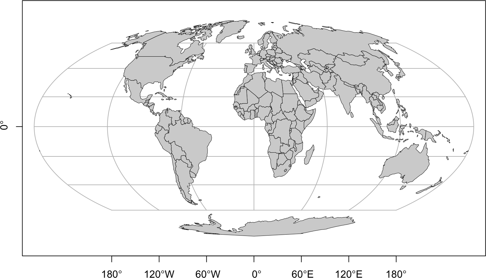
# Зарубежная Европа в Конической равнопромежуточной проекции.
# Задаем только необходимые параметры проекции
countries_eqdc = countries |>
filter(continent == 'Europe' & sovereignt != 'Russia') |>
st_transform('+proj=eqdc +lon_0=10 +lat_1=30 +lat_2=60 +datum=WGS84 +units=m')
plot(st_geometry(countries_eqdc),
col = 'lightgray',
lwd = 0.5,
graticule = TRUE,
axes = TRUE)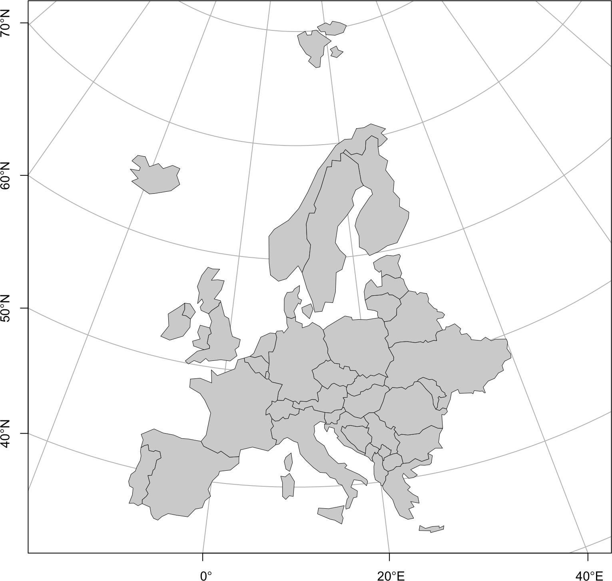
Работа с проекцией растровых данных также предполагает четыре возможных процедуры: чтение, создание, замена и проецирование:
st_crs(dem) # читаем систему координат
## Coordinate Reference System:
## User input: WGS 84
## wkt:
## GEOGCRS["WGS 84",
## ENSEMBLE["World Geodetic System 1984 ensemble",
## MEMBER["World Geodetic System 1984 (Transit)"],
## MEMBER["World Geodetic System 1984 (G730)"],
## MEMBER["World Geodetic System 1984 (G873)"],
## MEMBER["World Geodetic System 1984 (G1150)"],
## MEMBER["World Geodetic System 1984 (G1674)"],
## MEMBER["World Geodetic System 1984 (G1762)"],
## MEMBER["World Geodetic System 1984 (G2139)"],
## ELLIPSOID["WGS 84",6378137,298.257223563,
## LENGTHUNIT["metre",1]],
## ENSEMBLEACCURACY[2.0]],
## PRIMEM["Greenwich",0,
## ANGLEUNIT["degree",0.0174532925199433]],
## CS[ellipsoidal,2],
## AXIS["geodetic latitude (Lat)",north,
## ORDER[1],
## ANGLEUNIT["degree",0.0174532925199433]],
## AXIS["geodetic longitude (Lon)",east,
## ORDER[2],
## ANGLEUNIT["degree",0.0174532925199433]],
## USAGE[
## SCOPE["Horizontal component of 3D system."],
## AREA["World."],
## BBOX[-90,-180,90,180]],
## ID["EPSG",4326]]
st_crs(dem) = NA # очищаем систему координат
st_crs(dem)
## Coordinate Reference System: NA
st_crs(dem) = st_crs(4326) # создаем систему координат
st_crs(dem)
## Coordinate Reference System:
## User input: EPSG:4326
## wkt:
## GEOGCRS["WGS 84",
## ENSEMBLE["World Geodetic System 1984 ensemble",
## MEMBER["World Geodetic System 1984 (Transit)"],
## MEMBER["World Geodetic System 1984 (G730)"],
## MEMBER["World Geodetic System 1984 (G873)"],
## MEMBER["World Geodetic System 1984 (G1150)"],
## MEMBER["World Geodetic System 1984 (G1674)"],
## MEMBER["World Geodetic System 1984 (G1762)"],
## MEMBER["World Geodetic System 1984 (G2139)"],
## ELLIPSOID["WGS 84",6378137,298.257223563,
## LENGTHUNIT["metre",1]],
## ENSEMBLEACCURACY[2.0]],
## PRIMEM["Greenwich",0,
## ANGLEUNIT["degree",0.0174532925199433]],
## CS[ellipsoidal,2],
## AXIS["geodetic latitude (Lat)",north,
## ORDER[1],
## ANGLEUNIT["degree",0.0174532925199433]],
## AXIS["geodetic longitude (Lon)",east,
## ORDER[2],
## ANGLEUNIT["degree",0.0174532925199433]],
## USAGE[
## SCOPE["Horizontal component of 3D system."],
## AREA["World."],
## BBOX[-90,-180,90,180]],
## ID["EPSG",4326]]Для проецирования растра в новую систему координат необходимо использовать функцию st_warp() Приведем несколько примеров проецирования.
Проекция Меркатора:
img_merc = st_warp(img, crs = 3857)
plot(st_rgb(img_merc), main = NULL, reset = FALSE)
plot(st_geometry(countries_merc),
border = rgb(1,1,1,0.5), lwd = 0.25, add = TRUE)
Проекция Мольвейде:
img_moll = st_warp(img, crs = st_crs('+proj=moll'), use_gdal = TRUE)
plot(st_rgb(img_moll, probs = c(0.01, 0.99),
stretch = "percent"), main = NULL, reset = FALSE)
plot(st_geometry(countries_moll),
border = rgb(1,1,1,0.5), lwd = 0.5, add = TRUE)
Проекция коническая равнопромежуточная:
prj = '+proj=eqdc +lon_0=10 +lat_1=30 +lat_2=60 +datum=WGS84 +units=m'
img_eqdc = st_warp(
img,
crs = st_crs(prj)
)
img_eqdc_euro = img_eqdc[st_bbox(countries_eqdc)]
plot(st_rgb(img_eqdc_euro), main = NULL, reset = FALSE)
plot(st_geometry(countries_eqdc),
border = rgb(1,1,1,0.5), lwd = 0.5, add = TRUE)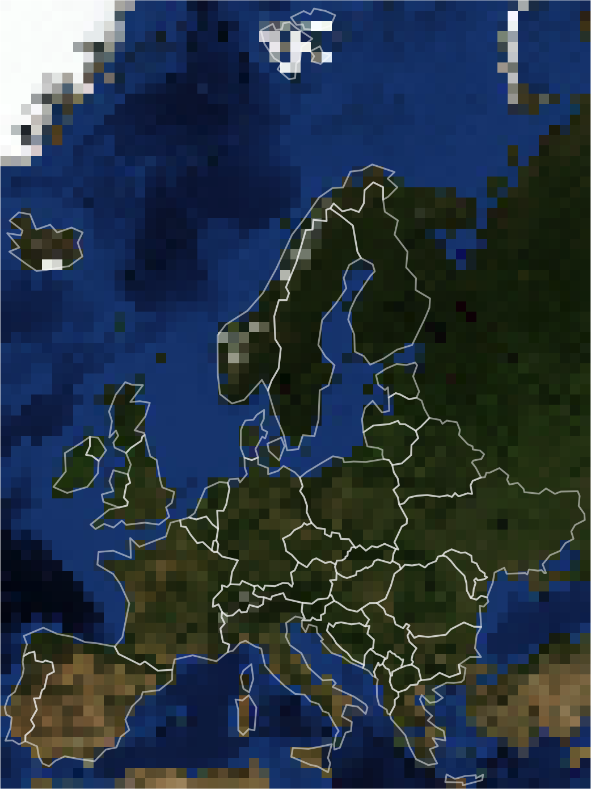
Более подробно вопросы выбора проекций и построения сеток координат рассматриваются в следующей главе.
9.6 Краткий обзор
Для просмотра презентации щелкните на ней один раз левой кнопкой мыши и листайте, используя кнопки на клавиатуре:
Презентацию можно открыть в отдельном окне или вкладке браузере. Для этого щелкните по ней правой кнопкой мыши и выберите соответствующую команду.
9.7 Контрольные вопросы и упражнения
9.7.1 Вопросы
- Что такое пространственные данные и какие модели пространственных данных существуют?
- Назовите номер стандарта ISO, в котором описана модель Simple Features.
- Перечислите основные принципы представления объектов в рамках стандарта Simple Features.
- Какие размерности координат допустимы в объектах Simple Features?
- Перечислите основные 7 типов геометрий. Сколько всего их описано в стандарте Simple Features?
- Как называются основные два формата представления объектов Simple Features?
- Перечислите основные компоненты пространственной привязки.
- Перечислите основные форматы описания пространственной привязки.
- Дайте расшифровку основных параметров строки PROJ.4.
- Какой номер EPSG имеет географическая система координат WGS84?
- В чем отличие трансформирования координат и проецирования?
- Какие три программных библиотеки составляют основу функциональности пакета sf? Каково их назначение?
- В чем отличие объектов типа sp от sf?
- Что означает префикс
st_, используемый в названиях функций пакета sf? - Какая функция используется для чтения данных средствами пакета sf?
- Перечислите три класса, слагающих иерархию представления пространственных объектов, реализуемую пакетом sf.
- Какой тип данных имеет колонка с геометрией объекта sf?
- Какая функция позволяет извлечь геометрическую колонку из объекта sf?
- С помощью какой структуры данных фактически реализован класс объектов sfg?
- Сколько карт будет построено функцией
plot()применительно к объекту sf? - Как с помощью функции
plot()нарисовать только геометрию объектов, не отображая атрибутивные характеристики? - Какой параметр функции
plot()отвечает за отображение/не отображение градусной сетки координат? - Каким способом можно узнать и задать систему координат объекта sf?
- Какая функция позволяет осуществить проецирование данных?
- Можно ли применять к объектам типа sf стандартные манипуляции dplyr?
- Что произойдет с геометрией пространственных объектов при выполнении агрегирования данных по группам значений заданных атрибутов?
- Перечислите функции, с помощью которых создаются объекты типа sfg, и структуры данных с координатами, которые должны быть поданы на вход этих функций.
- Назовите три правила, которым подчиняется формат представления координат вершин полигональных объектов.
- Может ли обычный полигон sf содержать дырку, или же для этого требуется создание мультиполигона?
- Как можно быстро собрать слой точечных объектов по их координатам, не собирая объекты вручную?
- Какая функция позволяет осуществлять преобразование типа геометрии sf?
- Перечислите требования, которым должно удовлетворять множество линейных объектов для того, чтобы к нему была применима операция полигонизации?
- Назовите функции sf, реализующие операцию добавления вершин в точках пересечения линий и операцию полигонизации линий.
- Перечислите названия функций sf, позволяющих получать ограничивающий прямоугольник, периметр, площадь, центроид, характерную точку и координаты объекта.
- С помощью какой функции осуществляется запись (экспорт) sf в файлы пространственных данных?
- Назовите основные параметры, определяющие геометрию растра.
- Какие пакеты отвечают за поддержку растровых данных в R?
- Как можно прочитать одноканальный и многоканальный растры в R?
- Какие функции можно использовать для визуализации одноканальных и многоканальных растров?
- Можно ли совмещать растровые и векторные слои на одном изображении? Если да, то как эта возможность реализуется?
- Каким образом можно узнать и задать пространственную привязку растрового набора данных?
- Какая функция отвечает за проецирование растровых данных? Перечислите ее параметры и их назначение.
- Объясните систему индексирования объектов типа stars.
- Как вычислить новую переменную объекта типа stars?
- Как осуществить экспорт растра в файл?
9.7.2 Упражнения
Преобразуйте точки землетрясений из набора данных quakes в пространственные объекты и отобразите их сначала средствами стандартной графической подсистемы, а затем на интерактивной карте средствами пакета mapview. Передайте магнитуду землетрясения в параметр
zcolфункцииmapview(), чтобы дифференцировать точки цветом по этому параметру.Таблица storms из пакета dplyr содержит данные трекинга тропических циклонов c 1975 по 2015 год. Выберите любой циклон и постройте для него линию трека прохождения и точки прохождения. Отобразите эти данные средствами стандартной графической подсистемы, а затем на интерактивной карте средствами mapview. Напишите программу таким образом, чтобы можно было выбирать имя циклона и программа отображала его трек на интерактивной карте.
Скачайте базу данных и цифровую модель рельефа на территорию Сатинского полигона МГУ. Изучите содержимое базы данных и постройте на основе этих данных общегеографическую карту средствами стандартной графической подсистемы.
| Самсонов Т.Е. Визуализация и анализ географических данных на языке R. М.: Географический факультет МГУ, 2023. DOI: 10.5281/zenodo.901911 |